Tout ce qu'il faut pour ouvrir la Page Facebook, le groupe Facebook et le compte Instagram : les réglages, les textes à coller, les images, les cinq premières publications de chaque réseau et les sondages. Chaque texte a son bouton « Copier ».
Les images vous sont envoyées en fichiers dans la conversation avec Claude, et sont rangées dans le dépôt, dossier docs/reseaux-sociaux/visuels. Les miniatures ci-dessous servent à les reconnaître.
Démarrer
Où vous en êtes (13 octobre 2026)
Instagram
✅ Créé : @timat_app. Le lien est ajouté en bas du site timat.app.
Page Facebook
✅ Créée (une Page reprise et renommée). À finir : les informations « À propos » — voir « Modifier depuis l'application » plus bas — puis m'envoyer son lien direct (sur la Page : ⋯ → Copier le lien) pour l'ajouter au site.
Groupe Facebook
⏳ À créer, depuis votre profil personnel.
L'ordre de création, le même jour
La Page Facebook d'abord : Instagram et l'outil de programmation de Meta (Meta Business Suite) s'y rattachent.
Le compte Instagram, en compte professionnel, relié à la Page.
Le groupe, créé depuis votre profil personnel, puis relié à la Page dans ses paramètres.
Ensuite, l'essentiel de votre énergie va au groupe. Repère concurrent relevé le 23 septembre 2026 en pied de page de Pandi-Panda : plus de 800 fans sur leur Page, plus de 2 000 membres dans leur groupe. Le groupe pèse deux fois et demie la Page.
Trois règles qui ne se discutent pas
Aucune photo d'enfant. Même floue, même de dos. Le droit à l'image d'un enfant appartient à ses parents, et une Page professionnelle n'en a pas besoin : tous les visuels du kit sont graphiques.
Jamais « agréée ». Votre agrément est en préparation. Les textes du kit parlent de votre CAP petite enfance et de TiMat, jamais d'un agrément.
Dans le groupe, on aide, on ne vend pas. Le lien vers TiMat est dans votre présentation et sur la Page. Le jour où quelqu'un demande « vous utilisez quoi comme appli ? », ce sont les membres qui répondent.
Page Facebook
Nom
TiMat
Catégorie
Logiciel (ajoutez « Application » si Facebook la propose)
Nom d'utilisateur
timatapp. Sur Facebook, seuls les lettres, les chiffres et le point sont acceptés (pas de « _ » comme sur Instagram), et une extension de domaine comme « .app » est refusée selon plusieurs guides — je n'ai pas pu lire la page officielle.
Site web
https://www.timat.app
Lien Instagram
@timat_app, à ajouter dans « Modifier les détails » (rubrique des liens ou des réseaux sociaux ; le libellé change selon la version) pour qu'il s'affiche sur la Page.
E-mail
contact@timat.app
Bouton d'action
« S'inscrire », vers https://www.timat.app
Téléphone
Facultatif sur Facebook. Laissez vide si vous ne voulez pas l'afficher.
Modifier les informations depuis l'application (iPhone)
Touchez ≡ Menu (en bas à droite), puis votre nom en haut → choisissez la Page TiMat. Vous « êtes » maintenant la Page.
Ouvrez la Page en touchant sa photo ou son nom.
Sous la couverture : Modifier (ou ⋯ → Modifier) — présentation, catégorie, site web, e-mail, coordonnées.
Autre chemin : l'onglet À propos, puis le crayon à côté de chaque rubrique.
Si « Modifier » n'apparaît pas, vous n'avez qu'un accès partiel à la Page : il faut le contrôle total (« accès Facebook »). Avec un accès partiel, Facebook ne laisse pas changer la catégorie. Les libellés changent d'une version de l'application à l'autre.
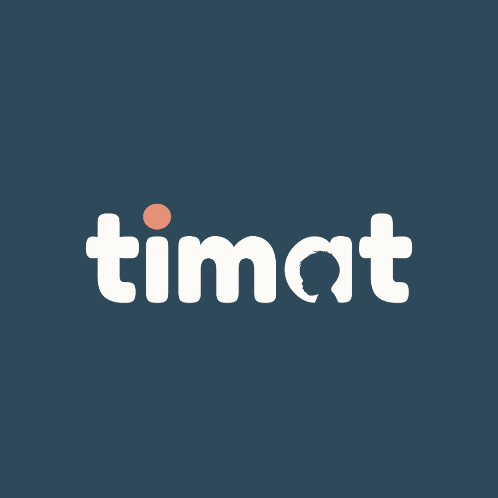
Photo de profil
Fichier 01-photo-profil, 1080 × 1080. Le logo tient dans le cercle de recadrage. La même photo sert pour Instagram.
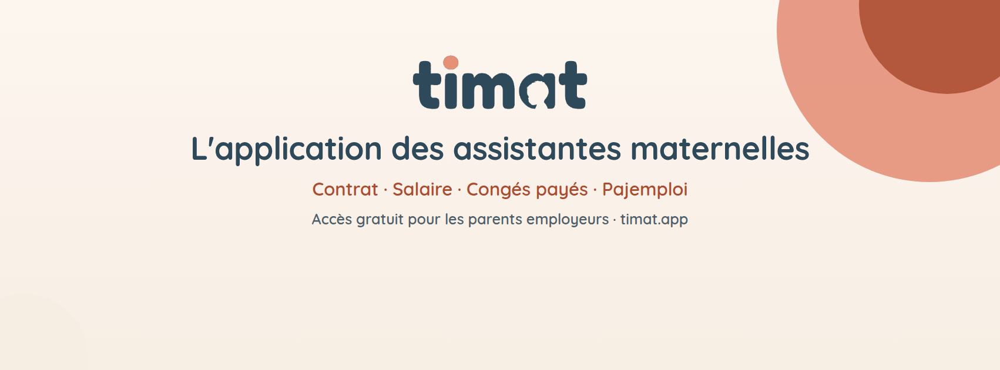
Photo de couverture
Fichier 02-couverture-page, 1702 × 630 : le double du format recommandé par Meta (851 × 315), pour rester net. Le texte est au centre, le bas à gauche reste libre pour la photo de profil.
Bio (courte)
L'application des assistantes maternelles et des parents employeurs : contrat, salaire, Pajemploi.
Détails / À propos (version longue)
TiMat réunit dans une seule application ce qui est aujourd'hui éparpillé entre un cahier, un tableur et plusieurs sites : le contrat et ses avenants, le pointage des heures signé des deux côtés, le salaire mensualisé, les congés payés, les indemnités, les bulletins de salaire et le récapitulatif à reporter sur Pajemploi.
Le parent employeur a son propre accès, gratuit : il voit les mêmes heures et les mêmes calculs.
Compte gratuit pour un enfant accueilli : contrat, pointage des heures, cahier de liaison. Bulletins de salaire et récapitulatif Pajemploi avec l'abonnement Pro à 9,99 € par mois, quel que soit le nombre d'enfants. 2 mois offerts, sans carte bancaire.
Créée en France par Sophie, titulaire du CAP petite enfance. Base de données hébergée à Paris.
Les cinq premières publications
Une par jour ouvré la première semaine suffit, puis trois par semaine. Chaque publication part avec son image ; les mêmes images servent sur Instagram.
P1 · lundi, semaine 1 · image 04
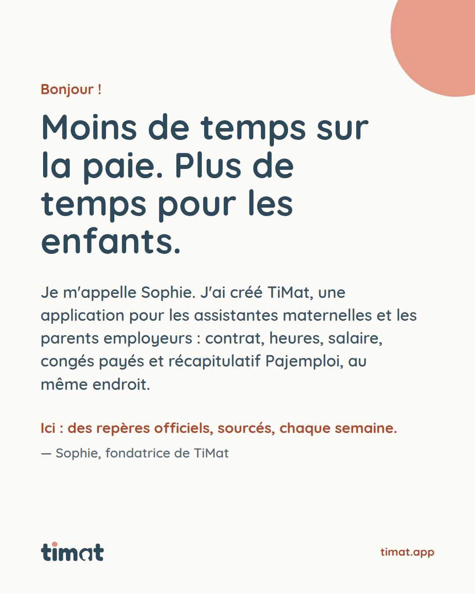
Présentation. À épingler en haut de la Page.
Texte de P1
Bonjour à toutes et à tous 👋
Je m'appelle Sophie, j'ai mon CAP petite enfance, et j'ai créé TiMat pour une raison simple : la partie administrative du métier d'assistante maternelle prend trop de temps, et une erreur de calcul coûte cher, d'un côté comme de l'autre.
TiMat réunit au même endroit le contrat, les heures, le salaire mensualisé, les congés payés, les indemnités et le récapitulatif à reporter sur Pajemploi. Le parent employeur a son propre accès, gratuit, et voit les mêmes chiffres.
Sur cette Page, je publierai chaque semaine un repère officiel, toujours avec sa source. Vos questions sont les bienvenues en commentaire.
👉 www.timat.app
P2 · mardi, semaine 1 · image 05
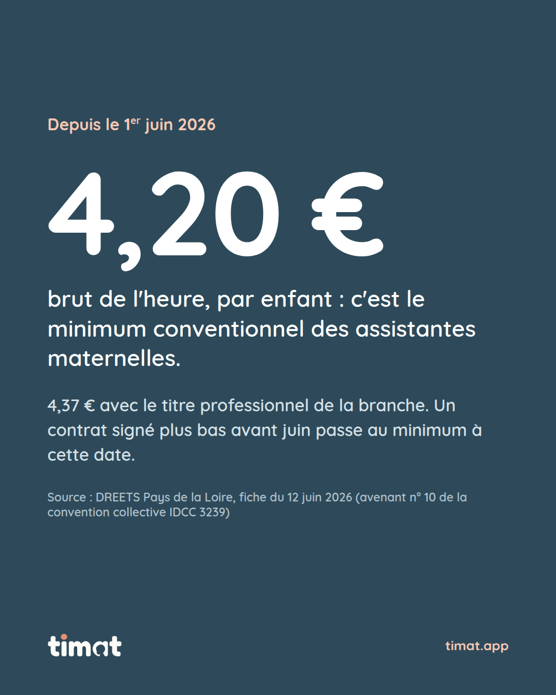
Le minimum horaire. Le sujet qui concerne tous les contrats signés avant juin.
Texte de P2
Depuis le 1er juin 2026, le salaire minimum conventionnel d'une assistante maternelle est de 4,20 € brut de l'heure et par enfant (4,37 € avec le titre professionnel de la branche).
Votre contrat a été signé avant juin à un taux plus bas ? C'est le minimum qui s'applique depuis cette date. Un avenant permet de l'écrire noir sur blanc.
Le plancher légal, lui, suit le SMIC : 0,281 × SMIC, soit 3,46 € depuis le 1er juin 2026. C'est le plus favorable des deux qui s'applique.
Source : DREETS Pays de la Loire, fiche « Assistants maternels : rémunération, indemnités et frais » du 12 juin 2026.
https://pays-de-la-loire.dreets.gouv.fr/sites/pays-de-la-loire.dreets.gouv.fr/IMG/pdf/fiche_remu_indemnites_frais_au_12062026.pdf
P3 · mercredi, semaine 1 · image 06
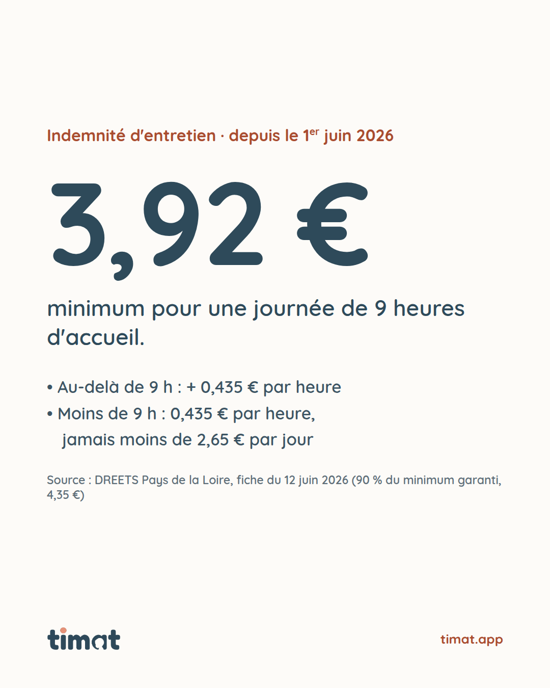
L'indemnité d'entretien, avec un exemple chiffré.
Texte de P3
L'indemnité d'entretien couvre ce que l'accueil coûte chez vous : eau, chauffage, électricité, jeux, petit matériel. Ce n'est pas du salaire : elle n'est pas soumise aux cotisations sociales.
Son minimum depuis le 1er juin 2026 :
• 3,92 € pour une journée de 9 heures (90 % du minimum garanti, 4,35 €)
• moins de 9 h : 0,435 € par heure, jamais moins de 2,65 € par jour
• au-delà de 9 h : 3,92 € + 0,435 € par heure supplémentaire
Exemple : 8 h d'accueil → 8 × 0,435 = 3,48 € minimum.
Source : DREETS Pays de la Loire, fiche du 12 juin 2026.
https://pays-de-la-loire.dreets.gouv.fr/sites/pays-de-la-loire.dreets.gouv.fr/IMG/pdf/fiche_remu_indemnites_frais_au_12062026.pdf
P4 · jeudi, semaine 1 · image 07
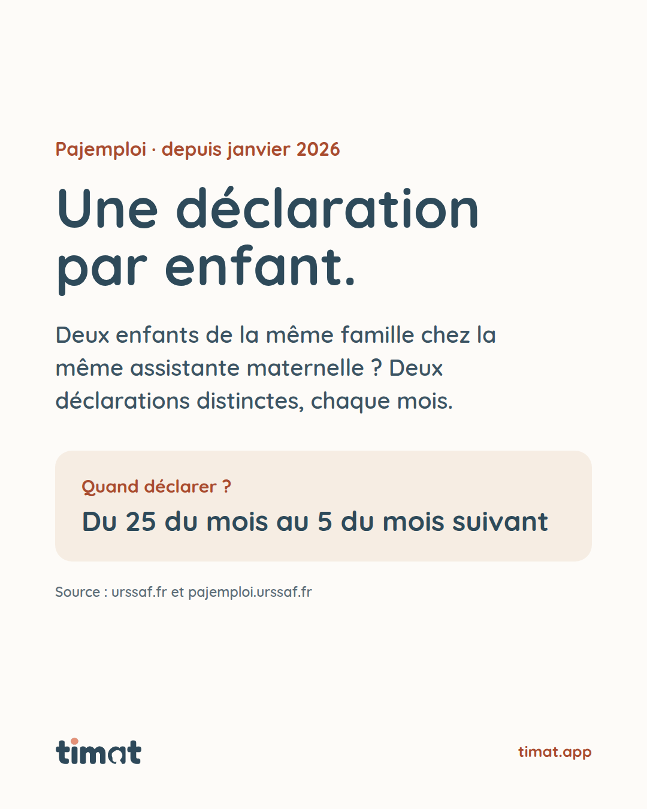
Un changement Pajemploi que beaucoup découvrent au moment de déclarer.
Texte de P4
Depuis janvier 2026, Pajemploi demande une déclaration par enfant.
Deux enfants de la même famille gardés par la même assistante maternelle : deux déclarations distinctes, chaque mois.
La période de déclaration, elle, ne change pas : du 25 du mois travaillé au 5 du mois suivant.
Source : urssaf.fr, « Pajemploi : une déclaration par enfant à partir de janvier 2026 ».
https://www.urssaf.fr/accueil/actualites/pajemploi-declaration-par-enfant.html
P5 · vendredi, semaine 1 · image 08
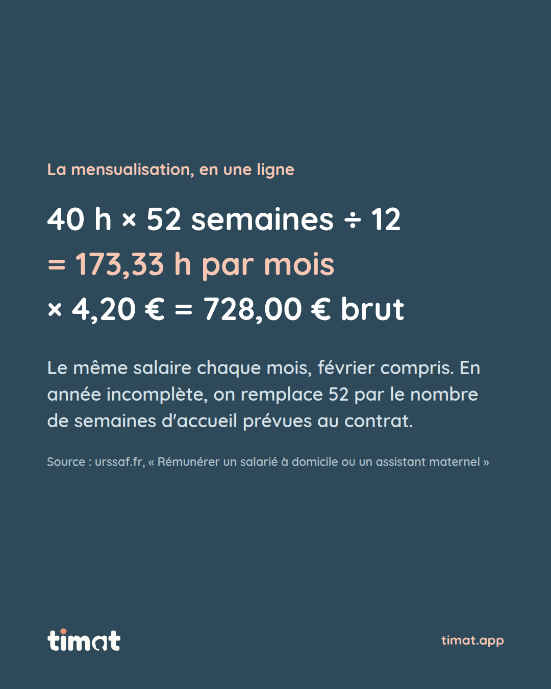
La mensualisation, le calcul qui explique tout le reste.
Texte de P5
Pourquoi le salaire d'une assistante maternelle est-il le même en février et en mars ? Parce qu'il est mensualisé : on calcule sur l'année, puis on divise par douze.
Année complète : heures par semaine × 52 ÷ 12.
Exemple à 40 h par semaine : 173,33 h par mois, soit 728,00 € brut au minimum de 4,20 €.
Année incomplète : on remplace 52 par le nombre de semaines d'accueil prévues au contrat.
Exemple de l'URSSAF : 40 h sur 37 semaines = 123,33 h par mois.
Source : urssaf.fr, « Rémunérer un salarié à domicile ou un assistant maternel ».
https://www.urssaf.fr/accueil/particulier/particulier-employeur/embaucher-un-salarie/remunerer-salarie-domicile.html
Groupe Facebook
Nom
Assistantes maternelles — paie, contrat et Pajemploi Les mots que les gens tapent dans la recherche Facebook. Pas « Groupe TiMat » : personne ne rejoint le groupe d'une marque.
Confidentialité
Privé (seuls les membres lisent les échanges) et visible (on peut le trouver dans la recherche).
Adhésion
Avec approbation et les trois questions ci-dessous.
Relier à la Page
Oui, dans les paramètres du groupe, une fois la Page créée.
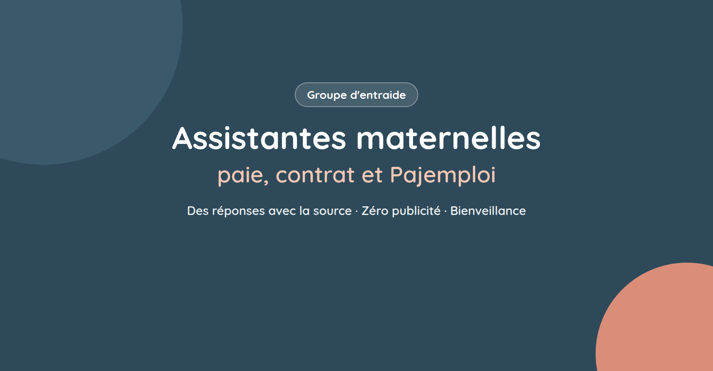
Photo de couverture
Fichier 03-couverture-groupe, 1640 × 856. Format donné par plusieurs guides spécialisés ; je n'ai pas trouvé de page officielle de Meta qui le précise. Le texte est centré, il reste lisible si le téléphone rogne les côtés.
Description du groupe
Un groupe pour s'entraider sur tout ce qui entoure le métier : le contrat, la mensualisation, les congés payés, les indemnités, la déclaration Pajemploi, la fin de contrat.
On y pose ses questions sans avoir peur d'avoir l'air de ne pas savoir. Il n'y a pas de question bête quand on est seule face à un bulletin de salaire.
Les réponses s'appuient sur la convention collective (IDCC 3239) et sur les textes officiels, avec le lien à chaque fois. Quand personne ne sait, on le dit.
Assistantes maternelles, futures assistantes maternelles et parents employeurs sont les bienvenus.
Le groupe est animé par Sophie, qui a créé TiMat, une application de gestion pour assistantes maternelles. C'est dit dès le départ pour que ce soit clair : ici, on répond aux questions, on ne vend pas.
Les règles (titre + détail)
Règle 1 · On répond avec la source
Convention collective, URSSAF, Pajemploi, service-public : le lien, ou à défaut « je crois, à vérifier ». Un chiffre sans source fait plus de mal que pas de réponse.
Pas de nom de famille, pas d'adresse, pas de photo d'enfant. Masquez les noms et les numéros avant de publier une capture de bulletin, de contrat ou de déclaration.
Règle 3 · Pas de publicité
Pas de publicité, pas de recrutement, pas de démarchage en message privé. Les liens vers des outils ou des formations sont retirés, TiMat compris.
Règle 4 · Bienveillance
On ne juge pas les collègues, ni les parents employeurs. Un désaccord sur des heures se raconte sans nommer personne.
Règle 5 · Le groupe ne remplace pas les professionnels
Ce groupe ne remplace ni un juriste, ni la PMI, ni l'URSSAF, ni un syndicat. Pour un litige, on oriente vers le bon interlocuteur.
Les trois questions d'adhésion
Questions
1. Êtes-vous assistante maternelle, en cours d'agrément, ou parent employeur ?
2. Acceptez-vous les règles du groupe, en particulier l'absence de publicité ?
3. Quelle est la question administrative qui vous bloque le plus en ce moment ?
Notez les réponses à la question 3 : ce sont vos sujets de publication pour les mois qui viennent.
Les cinq premières publications
Invitez d'abord à la main : vos collègues de CAP, vos formatrices, les assistantes maternelles de votre secteur. Visez 30 membres avant d'en parler publiquement : un groupe vide ne recrute personne.
G1 · lundi, semaine 1 · à épingler (« Annonce »)
Bienvenue
Bienvenue dans le groupe 👋
Je m'appelle Sophie. J'ai mon CAP petite enfance, et j'ai ouvert ce groupe parce que la partie administrative du métier — contrat, mensualisation, congés payés, Pajemploi — mérite un endroit où l'on peut poser ses questions sans se sentir jugée.
Trois choses à savoir :
• on répond avec la source (convention collective, URSSAF, Pajemploi) ;
• pas de publicité, ni la mienne ni celle des autres ;
• aucune photo d'enfant, aucun nom de famille.
Pour commencer, présentez-vous en commentaire : assistante maternelle depuis combien de temps (ou en cours d'agrément, ou parent employeur), et votre département. Et si une question vous travaille, posez-la : c'est fait pour ça.
G2 · mardi, semaine 1 · sondage
Sondage : la question
Qu'est-ce qui vous prend le plus de temps, chaque mois ?
Sondage : les réponses (une par ligne)
Calculer les heures et le salaire
Les congés payés
La déclaration Pajemploi
Les absences et les heures en plus
La fin de contrat
Autre chose (dites-le en commentaire)
Dans le groupe, choisissez « Sondage » parmi les options de publication, puis collez la question et les réponses.
Petit rappel qui concerne beaucoup de contrats signés avant l'été 👇
Depuis le 1er juin 2026, le minimum conventionnel est de 4,20 € brut de l'heure et par enfant (4,37 € avec le titre professionnel de la branche). Un contrat signé plus bas avant juin passe au minimum à cette date ; un avenant permet de l'écrire.
Le plancher légal (0,281 × SMIC) est de 3,46 € : c'est le plus favorable des deux qui s'applique.
Source : DREETS Pays de la Loire, fiche du 12 juin 2026.
https://pays-de-la-loire.dreets.gouv.fr/sites/pays-de-la-loire.dreets.gouv.fr/IMG/pdf/fiche_remu_indemnites_frais_au_12062026.pdf
Vous avez vérifié votre taux ? Dites en commentaire si vous avez dû faire un avenant.
G4 · mardi, semaine 2 · sondage
Sondage : la question
Comment suivez-vous vos heures d'accueil ?
Sondage : les réponses
Un cahier papier
Un tableur (Excel, Google Sheets…)
Une application
Seulement au moment de déclarer sur Pajemploi
Je ne les note pas
Vos contrats sont plutôt en année complète ou en année incomplète ?
Sondage : les réponses
Année complète
Année incomplète
J'ai les deux
Je ne sais pas trop
Votre premier commentaire, sous le sondage
Pour celles qui hésitent, la différence tient en une ligne :
• Année complète : heures par semaine × 52 ÷ 12. Les congés payés sont compris dans le salaire mensualisé.
• Année incomplète : heures par semaine × nombre de semaines d'accueil prévues ÷ 12. Les congés payés se paient en plus.
Exemple de l'URSSAF : 40 h sur 37 semaines = 123,33 h par mois.
Source : https://www.urssaf.fr/accueil/particulier/particulier-employeur/embaucher-un-salarie/remunerer-salarie-domicile.html
G6 · jeudi 22 octobre · repère sourcé (sans lien vers TiMat)
Publication
Bon à savoir pour celles qui préparent leur agrément 👇
La réunion d'information de la PMI est facultative. Le ministère l'a rappelé aux départements en janvier 2026 : elle n'est « en aucun cas un prérequis », et le dossier peut être déposé sans y avoir assisté. Aucune attestation de présence ne peut être exigée dans le dossier.
Elle reste utile : on y découvre le calendrier de son département, et on y croise des professionnelles en exercice.
Source : ministère des Solidarités, fiche pratique n°1 (janvier 2026)
https://solidarites.gouv.fr/sites/solidarite/files/2026-01/SPPE-Fiche-pratique-1-La-reunion-information.pdf
Dans votre département, on vous l'a présentée comme obligatoire ?
G7 · mardi 27 octobre · sondage + explication en commentaire
Sondage : la question
Votre PMI vous a-t-elle déjà demandé de la prévenir en cas d'arrêt maladie ?
Sondage : les réponses
Oui, à chaque arrêt
Oui, une fois
Non, jamais
Je ne savais pas qu'elle pouvait le demander
Votre premier commentaire, sous le sondage
Ce que dit le ministère (fiche pratique n°5, avril 2026) : aucun texte n'oblige à informer la PMI d'un arrêt maladie, ni d'une grossesse. Et une absence pour maladie ne peut pas, à elle seule, justifier la suspension d'un agrément.
Source : https://solidarites.gouv.fr/sites/solidarite/files/2026-04/Fiche%20pratique_%20Le%20r%C3%B4le%20et%20l'action%20de%20la%20PMI%20vis-%C3%A0-vis%20de%20la%20sant%C3%A9%20des%20assistants%20maternels.pdf
G8 · jeudi 29 octobre · repère sourcé (sans lien vers TiMat)
Publication
Une collégienne vous demande un stage d'observation ? 👇
La PMI n'a pas à l'autoriser : aucun texte ne lui donne ce pouvoir, et vous n'êtes pas obligée de la prévenir (fiche pratique n°6 du ministère, mai 2026).
En revanche, prévenez chaque parent employeur et demandez son accord avant le début du stage : la convention collective (article 91-3) vous engage à les informer de tout changement dans les conditions d'accueil.
Et pas d'attestation d'honorabilité à demander à une stagiaire chez vous ou en MAM.
Source : https://solidarites.gouv.fr/sites/solidarite/files/2026-05/Fiche%20pratique6-PMI-Favoriser%20laccueil%20de%20stagiaires%20par%20les%20assistants%20maternels.pdf
Vous avez déjà accueilli une stagiaire ? Racontez en commentaire comment ça s'est passé.
G9 · mardi 3 novembre · sondage + explication en commentaire
Sondage : la question
Après votre dernière visite de contrôle de la PMI, avez-vous reçu un compte rendu écrit ?
Sondage : les réponses
Oui
Non
Seulement un retour oral
Je n'ai pas encore eu de contrôle
Votre premier commentaire, sous le sondage
Ce que le ministère recommande aux PMI (fiche pratique n°3, mars 2026) :
• un compte rendu de visite rédigé et transmis à chaque fois ;
• des demandes de mise en conformité proportionnées aux risques ;
• des demandes formulées par écrit, avec un délai raisonnable pour les réaliser.
Source : https://solidarites.gouv.fr/sites/solidarite/files/2026-03/SPPE-Fiche-pratique-3-Controle-conditions-accueil-a-domicile-assistant-maternel.pdf
G10 · jeudi 5 novembre · repère sourcé (sans lien vers TiMat)
Publication
Le 11 novembre tombe un mercredi cette année. Est-il payé ? 👇
• C'est le contrat qui dit quels jours fériés sont travaillés.
• Un férié non travaillé qui tombe un jour habituellement travaillé est payé normalement, à condition d'avoir travaillé le dernier jour prévu avant et le premier jour prévu après (sauf absence autorisée à l'avance).
• Un férié travaillé (hors 1er mai) : les heures de ce jour-là sont majorées de 10 %.
• Le 1er mai est à part : chômé et payé, et payé double s'il est travaillé.
Et un jour férié n'est jamais un jour de congé payé : ce sont deux compteurs distincts.
Source : convention collective IDCC 3239, article 47.2 (Légifrance).
https://www.legifrance.gouv.fr/conv_coll/article/KALIARTI000043942117
Votre contrat liste-t-il les jours fériés travaillés ? Dites-le en commentaire.
G11 · mardi 10 novembre · sondage + explication en commentaire
Sondage : la question
Vos parents employeurs utilisent-ils Pajemploi+ ?
Sondage : les réponses
Oui, tous
Certains seulement
Non, aucun
Je ne sais pas ce que c'est
Votre premier commentaire, sous le sondage
Pajemploi+ en deux phrases : l'Urssaf prélève au parent seulement ce qui reste à sa charge (le salaire moins le CMG), et verse elle-même le salaire complet à l'assistante maternelle. Aujourd'hui c'est gratuit et facultatif, avec un accord écrit des deux côtés.
À savoir : la loi de financement de la sécurité sociale pour 2026 conditionne le versement du CMG à l'utilisation de Pajemploi+, avec un déploiement à partir de septembre 2027. Les décrets d'application ne sont pas encore parus.
Sources : Pajemploi, « Le service Pajemploi+ » https://www.pajemploi.urssaf.fr/pajewebinfo/cms/sites/pajewebinfo/accueil/pajemploi-plus.html
Loi n° 2025-1403 du 30 décembre 2025 : https://www.legifrance.gouv.fr/jorf/id/JORFTEXT000053226384
G12 · jeudi 12 novembre · repère sourcé (sans lien vers TiMat)
Publication
Congés d'été 2027 : la date à noter dès maintenant, c'est le 1er mars 👇
Les dates de congés se fixent d'un commun accord, au plus tard le 1er mars.
• Un seul employeur : sans accord, c'est lui qui fixe les dates.
• Plusieurs employeurs : sans accord entre eux, l'assistante maternelle fixe elle-même quatre semaines entre le 1er mai et le 31 octobre et une semaine en hiver, et les communique par écrit à chaque famille au plus tard le 1er mars.
Conseil : annoncez vos souhaits par écrit dès janvier, à chaque famille.
Source : convention collective IDCC 3239, article 102.1.1.
https://www.legifrance.gouv.fr/conv_coll/id/KALICONT000044594539/
G13 · mardi 17 novembre · question ouverte
Publication
Question pour vous ce mardi 👇
Quelle est LA question sur votre contrat, votre salaire ou Pajemploi à laquelle vous n'avez jamais trouvé de réponse claire ?
Posez-la en commentaire : on y répondra dans les prochaines publications, avec la source officielle à chaque fois.
Stories Instagram : sondage et lien vers le groupe
Remplace le canal de diffusion, abandonné le 23 octobre 2026. À publier vous-même depuis l'application Instagram : selon plusieurs outils de programmation, l'API d'Instagram ne permet pas d'ajouter les autocollants « Sondage » et « Lien » depuis Metricool. Les deux stories se suivent le même jour : d'abord le sondage, puis le lien.
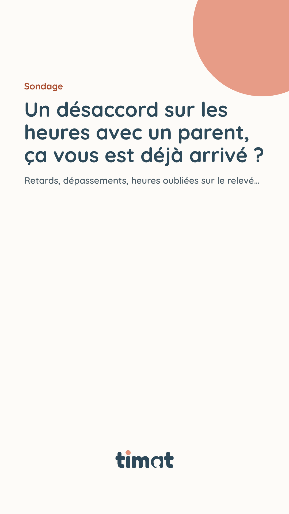
22 · sondage
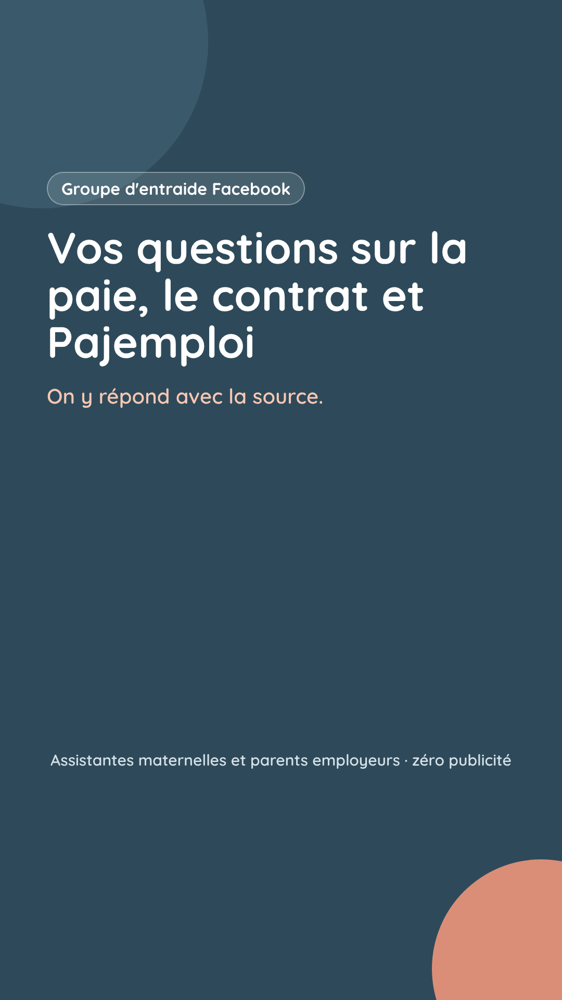
23 · lien groupe
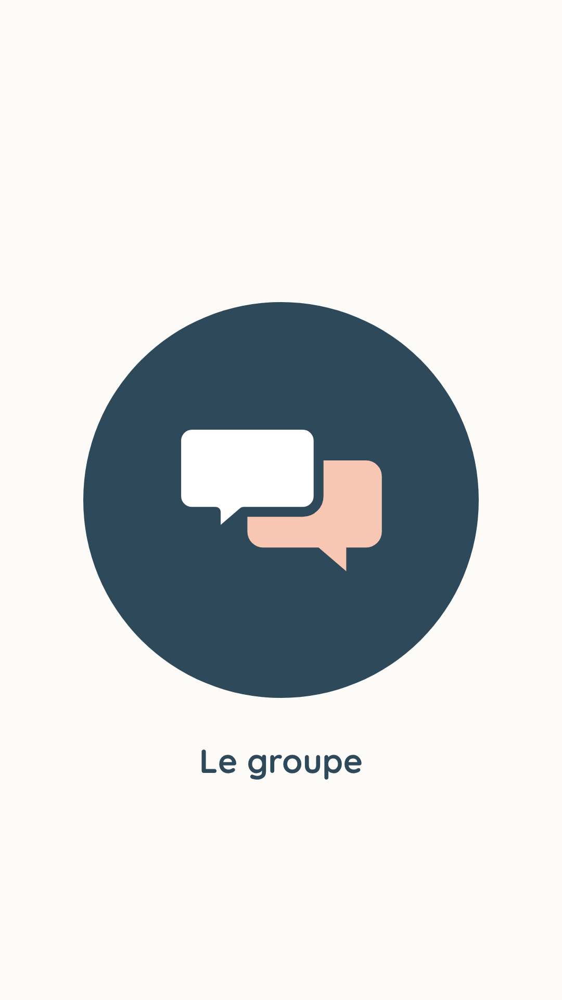
24 · « Le groupe »
ST1 · story sondage · image 22
Instagram → + → Story, choisissez l'image 22 dans vos photos.
Touchez l'icône des autocollants (le carré souriant) → Sondage.
Collez la question et les deux réponses ci-dessous, posez l'autocollant dans l'espace vide au milieu.
Partager → Votre story.
Question de l'autocollant
Déjà eu un désaccord sur les heures ?
Réponses (une par case)
Oui, déjà
Jamais
ST2 · story lien vers le groupe · image 23 · juste après ST1
+ → Story, image 23.
Autocollants → Lien → collez l'adresse du groupe ci-dessous.
Personnaliser le texte de l'autocollant → collez « Rejoindre le groupe ». Sans texte, Instagram affiche l'adresse.
Posez l'autocollant dans l'espace vide au milieu → Partager → Votre story.
Adresse du lien
https://www.facebook.com/share/g/1DrVY3qE2W/
Texte de l'autocollant
Rejoindre le groupe
Les ranger « à la une » (les stories disparaissent après 24 h)
Ouvrez votre story ST1 → À la une (en bas) → choisissez Vos questions.
Ouvrez ST2 → À la une → Nouveau → titre Le groupe → Ajouter.
Couverture : sur votre profil, appui long sur la bulle « Le groupe » → Modifier la story à la une → Modifier la couverture → icône de la galerie → image 24. Si la galerie n'est pas proposée, publiez l'image 24 en story et ajoutez-la à « Le groupe », comme les couvertures 09 à 14.
Faites glisser « Le groupe » en première position si l'application le permet ; sinon, elle se place selon la dernière story ajoutée.
Les libellés changent selon les versions de l'application. Le lien reste cliquable dans « à la une » : c'est le chemin permanent vers le groupe, en plus de la bio.
Une story par jour, du 24 au 30 octobre
Mêmes gestes que ST1 et ST2 : l'image depuis vos photos, puis l'autocollant indiqué, posé dans l'espace vide. Les jours de publication programmée (26, 28 et 30 octobre à 20 h 30), la story est la publication elle-même : soit l'image de story faite exprès (43 et suivantes), programmée dans Meta Business Suite à 20 h 35, soit, sous la publication, l'avion en papier → Ajouter à votre story.
Le quiz sur le compte de Sophie. Elle voulait le vrai quiz d'Instagram (réponse verte ou rouge tout de suite) : l'autocollant Quiz manque sur son compte, et l'astuce du Reel en brouillon n'a rien changé (28/10). On fait donc : l'image quiz (27, 29, 40, 42) avec l'autocollant Sondage et les réponses du tableau, puis tout de suite après, au même moment, l'image réponse (55 à 58, bonne réponse en vert). La personne vote, touche à droite, et voit la réponse aussitôt. Jamais la réponse le soir.
Story 1, le quiz : « + » → Story → l'image quiz → icône des autocollants → Sondage → question « Votre réponse ? » → taper les réponses du tableau (« Ajouter une option » pour la troisième) → OK → placer l'autocollant sous « Votez juste en dessous » → Votre story.
Story 2, juste après : « + » → Story → l'image réponse (55 à 58) → Votre story, sans autocollant.
Si un jour l'autocollant Quiz apparaît : le prendre à la place du Sondage, toucher la bonne réponse pour qu'elle devienne verte ; l'image réponse reste facultative.
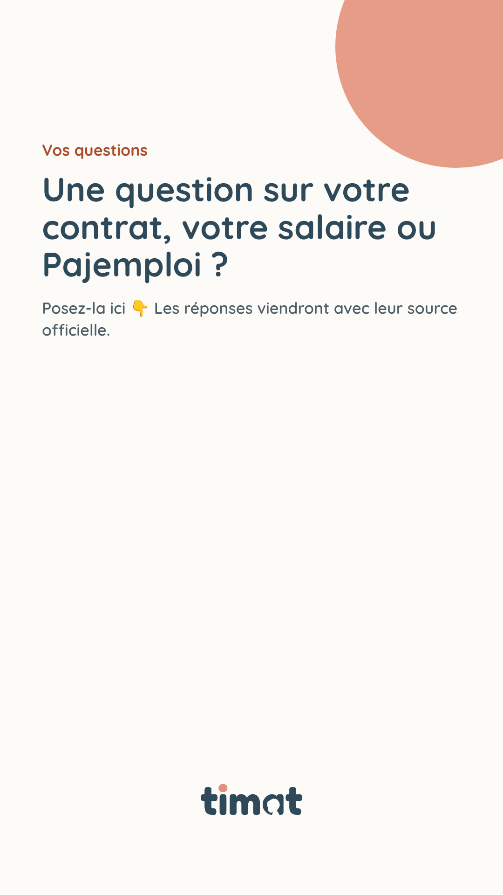
25 · questions
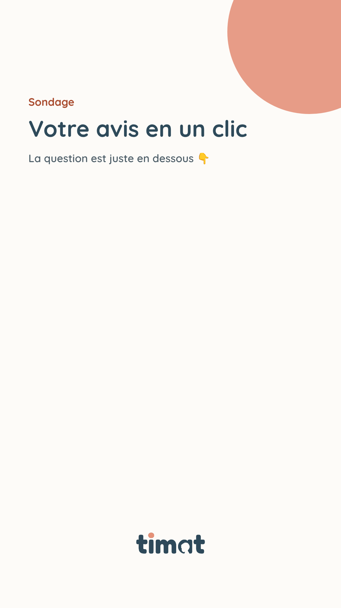
26 · sondage
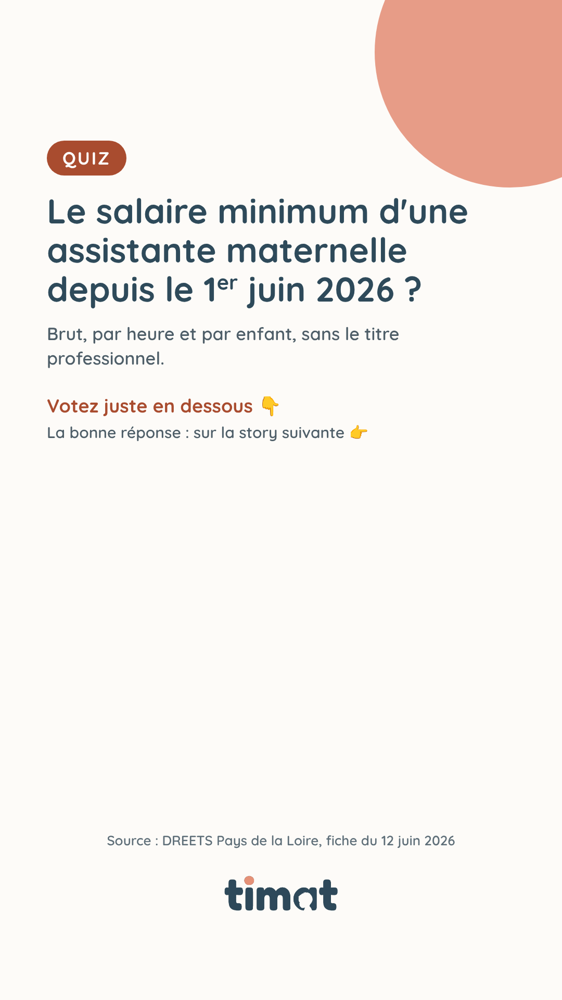
27 · quiz minimum
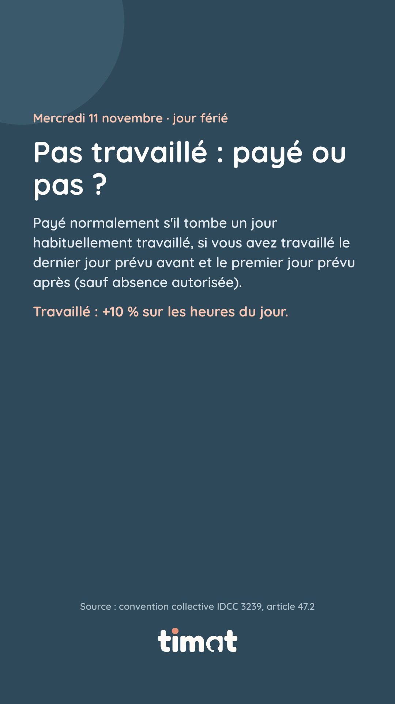
28 · 11 novembre
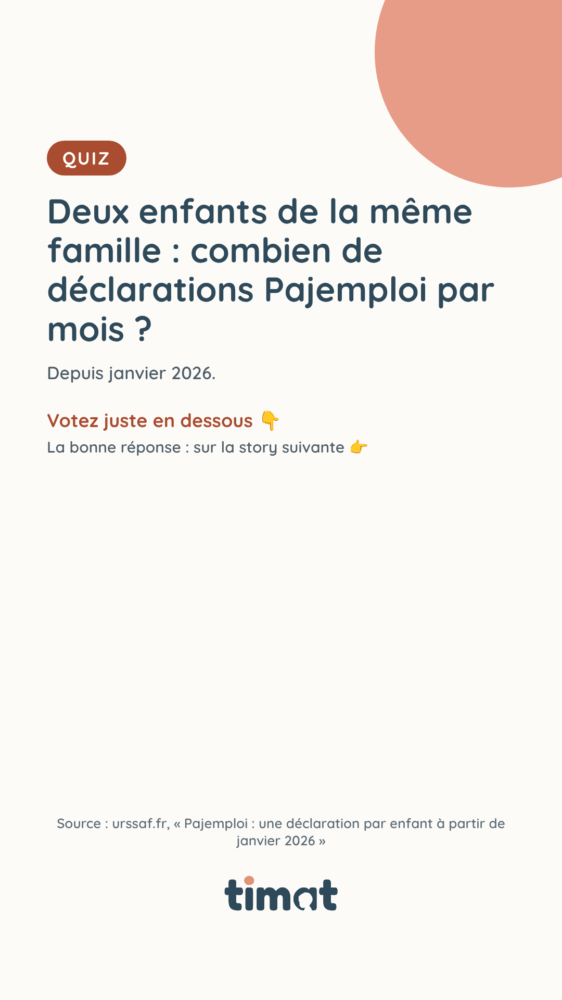
29 · quiz Pajemploi
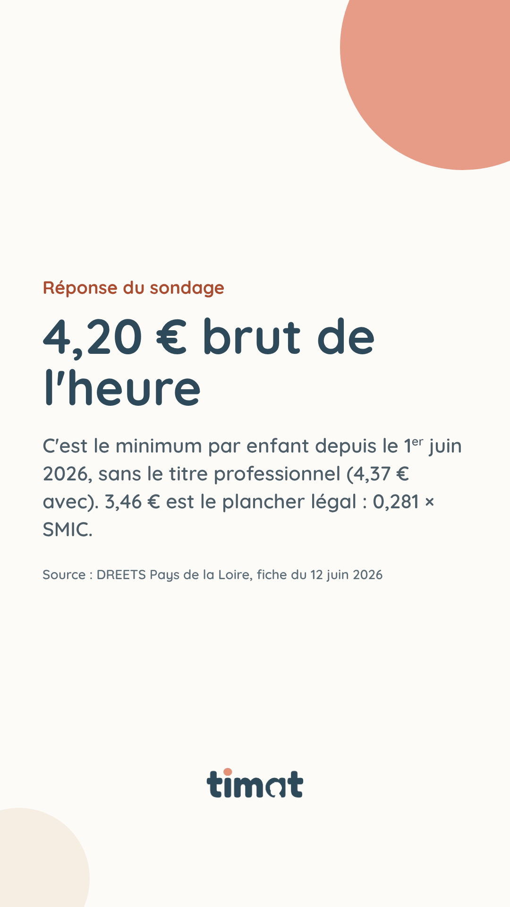
55 · réponse minimum
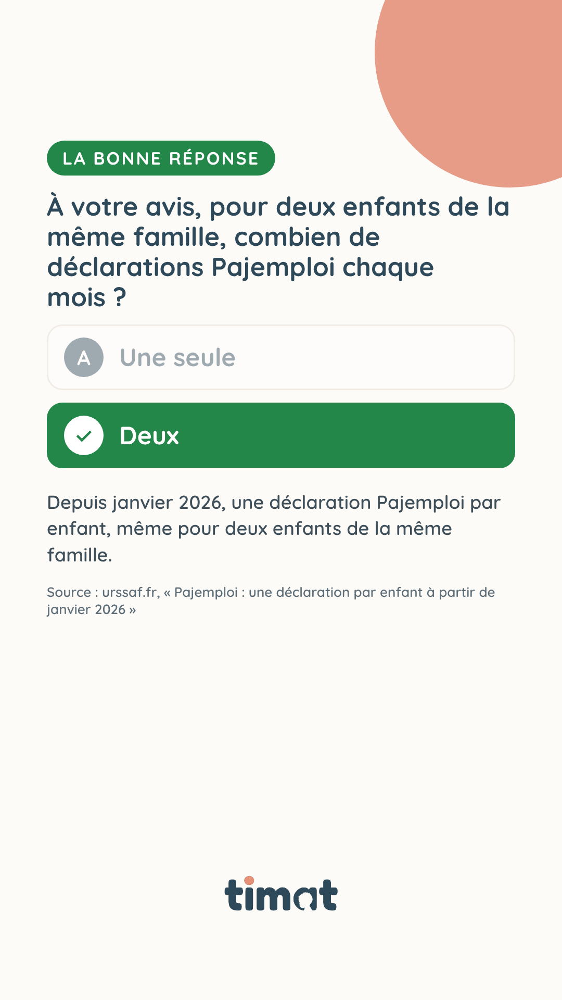
56 · réponse Pajemploi
Jour
Story
Autocollant
À la une
Sam. 24/10
Image 25
Questions : « Posez votre question 👇 »
Vos questions
Dim. 25/10
Image 26
Sondage : « Vos parents signent-ils un relevé d'heures chaque mois ? » Oui / Non
Quiz du 27/10 : 4,20 € brut est le minimum conventionnel sans le titre professionnel (4,37 € avec), 3,46 € le plancher légal (0,281 × SMIC à 12,31 €), 3,64 € une simple mauvaise réponse. Les réponses à la boîte à questions deviennent des stories ou des publications du groupe, toujours avec leur source ; ne jamais montrer le nom de la personne.
Une story par jour, du 31 octobre au 6 novembre
40 · quiz congés
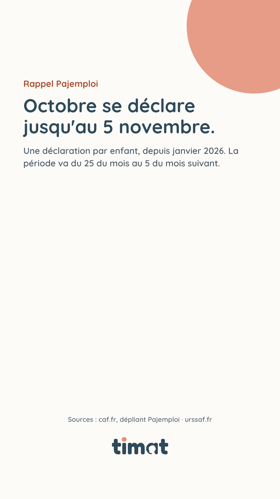
41 · Pajemploi
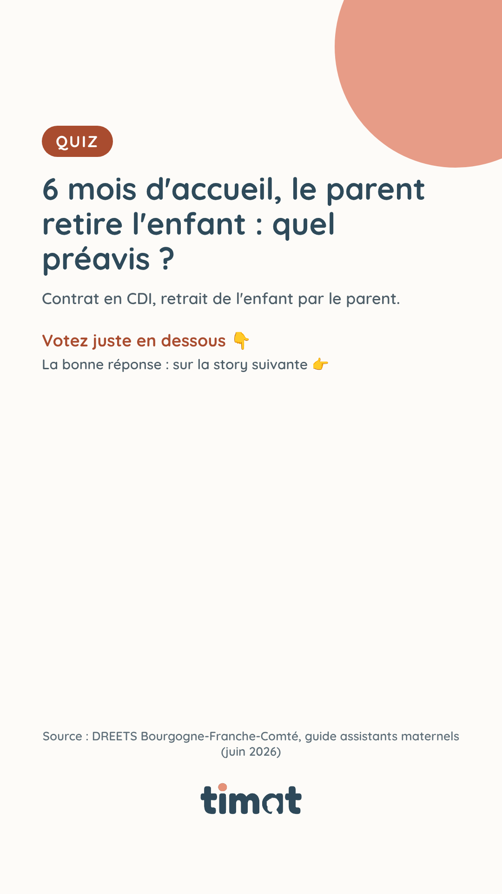
42 · quiz préavis
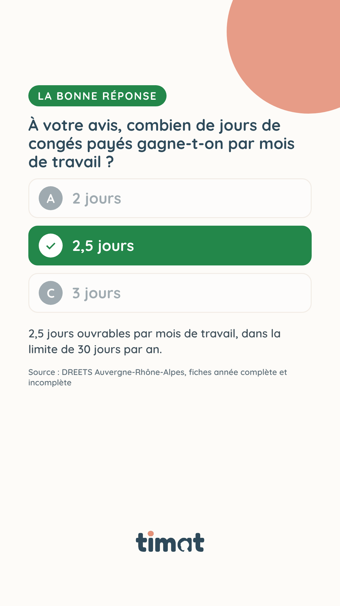
57 · réponse congés
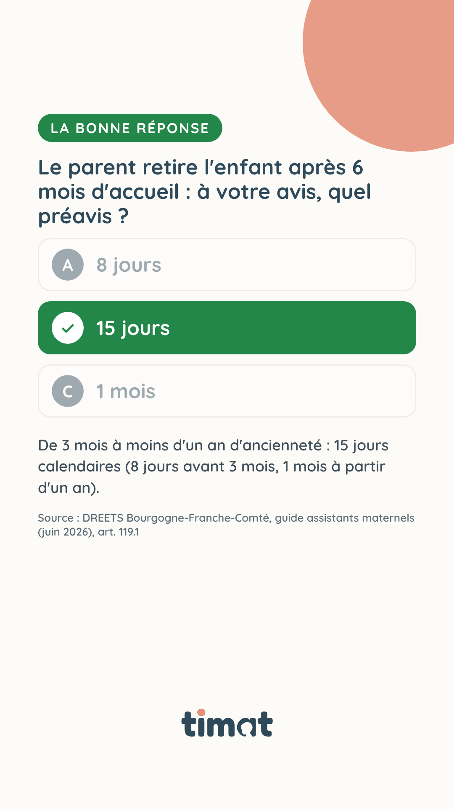
58 · réponse préavis
Jour
Story
Autocollant
À la une
Sam. 31/10
Image 40, puis juste après l'image 57 (réponse)
Sondage : 2 jours / 2,5 jours / 3 jours (bonne réponse : 2,5 jours, sur l'image 57)
Congés
Dim. 1/11
Image 26
Sondage : « La fin de contrat, ça vous stresse ? » Oui / Non
Vos questions
Lun. 2/11
Image 45 programmée à 20 h 35 (ou la publication repartagée après 20 h 30)
aucun
Indemnités
Mar. 3/11
Image 41
Lien vers le simulateur Pajemploi de TiMat, texte « Le simulateur »
Pajemploi
Mer. 4/11
Image 46 programmée à 20 h 35 (ou la publication repartagée après 20 h 30)
aucun
L'appli
Jeu. 5/11
Image 42, puis juste après l'image 58 (réponse)
Sondage : 8 jours / 15 jours / 1 mois (bonne réponse : 15 jours, sur l'image 58 ; le détail vendredi avec la publication du préavis et l'image 47)
Vos questions
Ven. 6/11
Image 47 programmée à 20 h 35 (ou la publication 11, préavis, repartagée après 20 h 30) ; puis l'image 23 avec le lien du groupe
Sources des quiz : 2,5 jours ouvrables par mois (DREETS Auvergne-Rhône-Alpes, comme la publication 6) ; 15 jours calendaires de préavis de 3 mois à moins d'un an d'ancienneté (DREETS Bourgogne-Franche-Comté, juin 2026, art. 119.1). Rappel Pajemploi : la déclaration se fait du 25 du mois au 5 du mois suivant (dépliant Pajemploi de la CAF), une par enfant depuis janvier 2026 (urssaf.fr).
Les sondages des semaines suivantes
Une story sondage par semaine, suivie de la story ST2 (republier l'image 23 avec le même lien). Le fond 22 peut resservir : la question écrite dans l'autocollant suffit. Ce sont des questions d'expérience, pas de réglementation : aucune ne demande de source.
Idées de questions (réponses entre parenthèses)
Vos parents signent-ils un relevé d'heures chaque mois ? (Oui / Non)
Vous calculez vos congés payés seule ? (Oui / Avec de l'aide)
La fin de contrat, ça vous stresse ? (Oui / Non)
Plutôt cahier papier ou appli pour les heures ? (Cahier / Appli)
Instagram
Type de compte
Compte professionnel, type « Entreprise », relié à la Page Facebook (nécessaire pour programmer depuis Meta Business Suite).
Nom d'utilisateur
timat_app — c'est le vôtre, déjà créé.
Nom affiché
TiMat · Assistante maternelle Le nom est cherchable sur Instagram : « assistante maternelle » y fait venir les bonnes personnes.
Catégorie
Logiciel (ou « Application » si proposée)
Lien
https://www.timat.app
Photo de profil
La même que la Page : image 01.
Bio
Contrat, salaire et Pajemploi des assistantes maternelles 🇫🇷
Repères officiels sourcés, chaque semaine
2 mois offerts sans carte bancaire ↓
Les six stories « à la une »
Publiez chaque image 09 à 14 en story, puis ajoutez-la à la une avec le titre indiqué. Instagram recadre la couverture en cercle : l'icône est au centre exprès. Ajoutez ensuite dans chaque « à la une » les stories du même sujet.
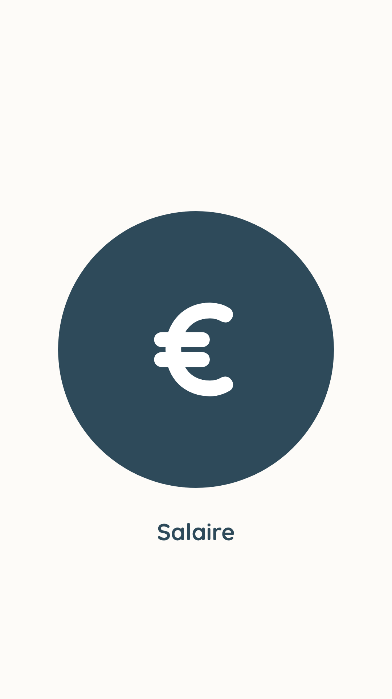
09 · Salaire
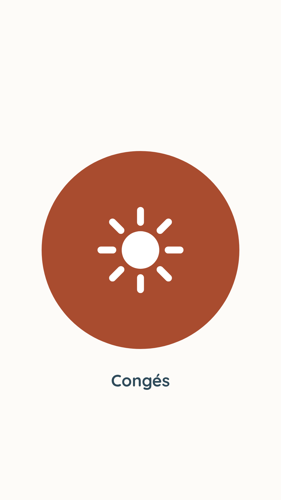
10 · Congés
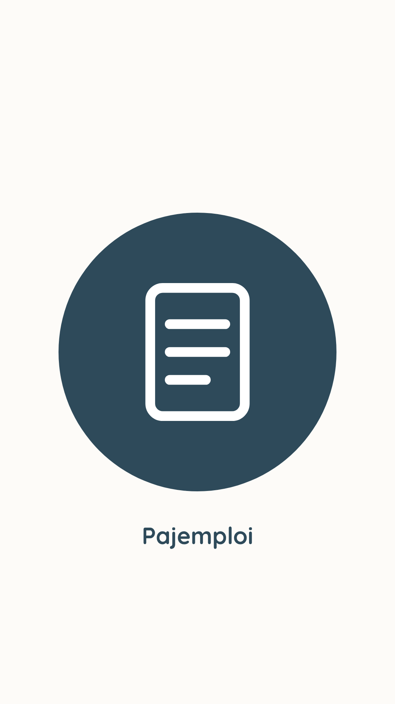
11 · Pajemploi
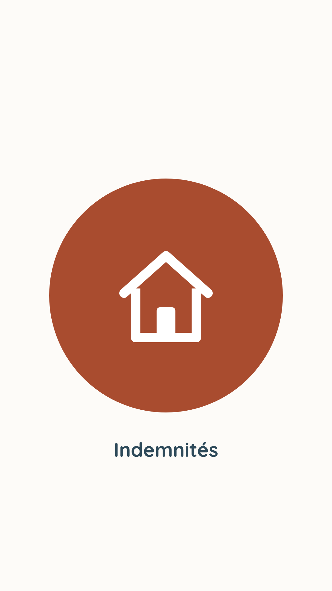
12 · Indemnités
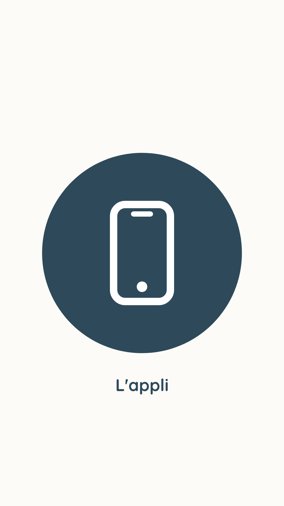
13 · L'appli
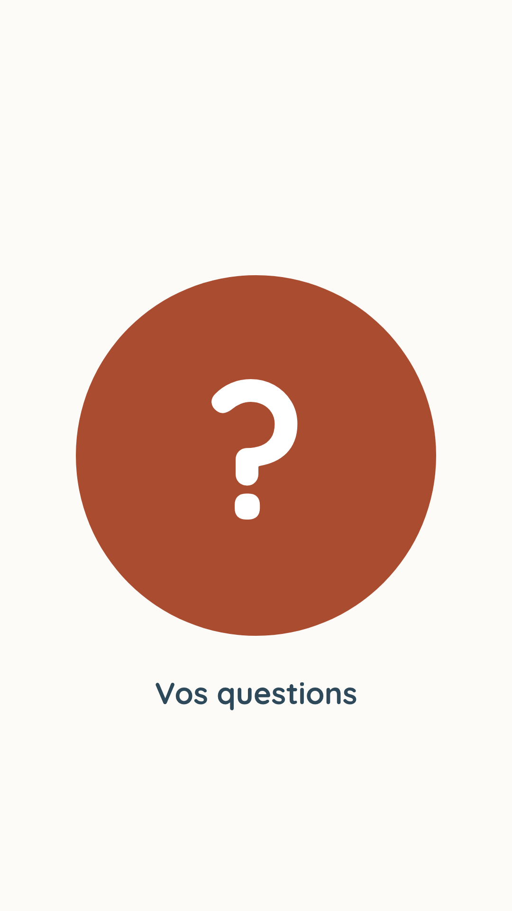
14 · Vos questions
Les cinq premières publications
Les mêmes images que la Page (04 à 08), en format 4:5 ; le texte reste dans la zone que le quadrillage du profil affiche. Sur Instagram, les liens des légendes ne sont pas cliquables : la source est citée en toutes lettres, le lien de TiMat est dans la bio.
I1 · image 04 · présentation
Légende I1
Bonjour 👋 Je m'appelle Sophie, j'ai mon CAP petite enfance, et j'ai créé TiMat pour que la paie prenne moins de temps aux assistantes maternelles.
Contrat, heures, salaire mensualisé, congés payés, indemnités et récapitulatif Pajemploi, au même endroit. Le parent employeur a son accès gratuit et voit les mêmes chiffres.
Ici : un repère officiel par semaine, toujours avec sa source. Posez vos questions en commentaire, elles deviendront les prochaines publications.
Lien dans la bio.
#assistantematernelle #assmat #assistantesmaternelles #nounou #pajemploi #parentemployeur #petiteenfance
Texte alternatif I1 (accessibilité)
Texte sur fond crème : « Moins de temps sur la paie. Plus de temps pour les enfants. » Présentation de Sophie, fondatrice de TiMat.
I2 · image 05 · minimum 4,20 €
Légende I2
4,20 € brut de l'heure et par enfant : c'est le minimum conventionnel depuis le 1er juin 2026 (4,37 € avec le titre professionnel de la branche).
Un contrat signé plus bas avant juin passe au minimum à cette date. Un avenant permet de l'écrire.
Le plancher légal, 0,281 × SMIC, est de 3,46 € : c'est le plus favorable des deux qui s'applique.
Source : DREETS Pays de la Loire, fiche du 12 juin 2026.
#assistantematernelle #assmat #salaire #pajemploi #conventioncollective #parentemployeur
Texte alternatif I2
Grand chiffre blanc sur fond bleu : 4,20 €, minimum brut de l'heure par enfant pour les assistantes maternelles depuis le 1er juin 2026.
I3 · image 06 · indemnité d'entretien
Légende I3
L'indemnité d'entretien n'est pas du salaire : elle couvre ce que l'accueil coûte chez vous, et n'est pas soumise aux cotisations sociales.
Minimum depuis le 1er juin 2026 :
• 3,92 € pour 9 heures d'accueil
• moins de 9 h : 0,435 € par heure, jamais moins de 2,65 € par jour
• exemple : 8 h → 3,48 €
Source : DREETS Pays de la Loire, fiche du 12 juin 2026.
#assistantematernelle #assmat #indemnitedentretien #pajemploi #parentemployeur #petiteenfance
Texte alternatif I3
Grand chiffre bleu sur fond crème : 3,92 €, indemnité d'entretien minimale pour une journée de 9 heures, avec les règles en dessous et au-delà de 9 heures.
I4 · image 07 · Pajemploi par enfant
Légende I4
Depuis janvier 2026 : une déclaration Pajemploi par enfant.
Deux enfants de la même famille chez la même assistante maternelle → deux déclarations, chaque mois. La période ne change pas : du 25 du mois au 5 du mois suivant.
Source : urssaf.fr, actualité « Pajemploi : une déclaration par enfant à partir de janvier 2026 ».
#pajemploi #assistantematernelle #assmat #parentemployeur #nounou
Texte alternatif I4
Texte : « Une déclaration par enfant. » Depuis janvier 2026 sur Pajemploi, à déclarer du 25 du mois au 5 du mois suivant.
I5 · image 08 · mensualisation
Légende I5
Le même salaire en février et en mars ? C'est la mensualisation : on calcule sur l'année, puis on divise par 12.
40 h × 52 semaines ÷ 12 = 173,33 h par mois
× 4,20 € = 728,00 € brut
En année incomplète, on remplace 52 par le nombre de semaines d'accueil prévues au contrat.
Source : urssaf.fr, « Rémunérer un salarié à domicile ou un assistant maternel ».
#assistantematernelle #assmat #mensualisation #salaire #pajemploi #parentemployeur
Texte alternatif I5
Calcul en grands chiffres sur fond bleu : 40 heures fois 52 semaines divisé par 12 égale 173,33 heures par mois, fois 4,20 € égale 728,00 € brut.
Deux stories sondage
Publiez l'image en story, ajoutez le sticker « Sondage » dans l'espace vide au centre, puis tapez la question et les réponses ci-dessous. Instagram limite le nombre de réponses : si votre application n'en propose que deux, gardez les deux premières.
15 · temps passé
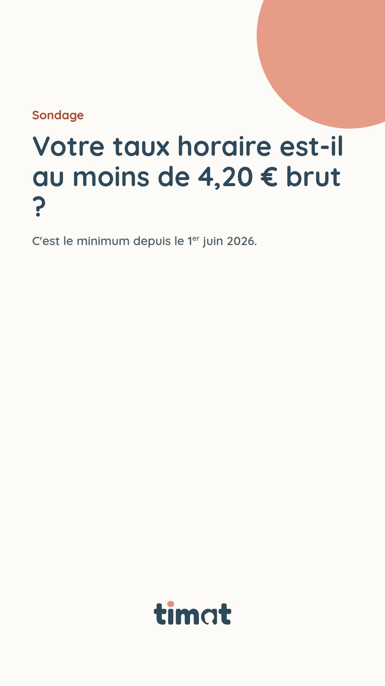
16 · minimum
S1 · image 15 · réponses du sticker
Moins d'1 h
1 à 3 h
Plus de 3 h
Je n'ose pas compter
S2 · image 16 · réponses du sticker
Oui
Non
Je vais vérifier
Les deux premières semaines
Jour
Page Facebook
Instagram
Groupe
Lun. S1
P1 présentation, épinglée
I1 + photo de profil, bio, à la une
G1 bienvenue, épinglée
Mar. S1
P2 minimum 4,20 €
I2
G2 sondage « ce qui prend du temps »
Mer. S1
P3 indemnité d'entretien
I3 + story S2
Répondre aux présentations
Jeu. S1
P4 Pajemploi par enfant
I4
G3 rappel du minimum
Ven. S1
P5 mensualisation
I5
—
Mar. S2
Le sujet le plus voté au sondage G2, expliqué avec sa source
Story S1
G4 sondage « suivi des heures »
Jeu. S2
—
—
G5 sondage + commentaire
Ensuite : trois publications par semaine sur la Page et Instagram (un chiffre, une question, un cas concret), et chaque jour quelques minutes de réponses dans le groupe.
Série 2 · à programmer avec Metricool
Préparée le 13 octobre 2026. Chaque chiffre a sa source, sur l'image et dans le texte. Les images sont en ligne sur le site (adresses ci-dessous) : c'est ce qui permet à Metricool de les envoyer. Rien n'est programmé sans votre accord : vous validez, puis je programme.
Où en est le compte Metricool « Timat » (13 octobre) : Page Facebook et Instagram @timat_app reliés ; aucune publication programmée ; sur la Page, seules deux photos (profil et couverture) — P1 à P5 restent à publier. Instagram : pas encore de données remontées dans Metricool, vérifiez votre grille avant de reprogrammer I1 à I5.
Date proposée (20 h 30)
Page Facebook
Instagram
Lun. 19 octobre
P1 présentation (image 04)
—
Mar. 20 octobre
P2 minimum 4,20 € (image 05)
—
Mer. 21 octobre
P3 indemnité d'entretien (image 06)
—
Jeu. 22 octobre
P4 Pajemploi par enfant (image 07)
—
Ven. 23 octobre
P5 mensualisation (image 08)
—
Lun. 26 octobre
6 · Congés payés (image 17)
Mer. 28 octobre
7 · Crédit d'impôt des parents (image 18)
Ven. 30 octobre
8 · Heures majorées (image 19)
Lun. 2 novembre
9 · Indemnité de rupture (image 20)
Mer. 4 novembre
10 · Le pointage dans TiMat (image 21)
20 h 30 : l'heure où les enfants sont repartis et où les parents ont fini leur journée. Metricool proposera de meilleures heures quand il aura quelques semaines de statistiques. Le forfait gratuit de Metricool permet 20 publications programmées par mois : ce calendrier en utilise 10.
Publication 6 · Congés payés · image 17
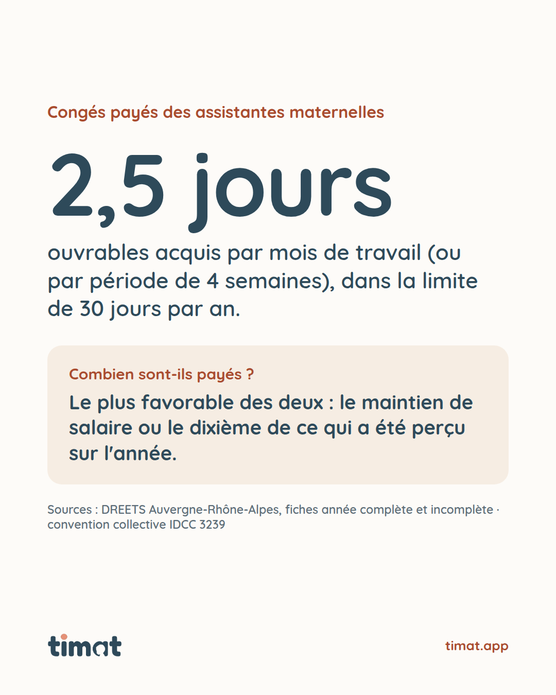
2,5 jours ouvrables par mois, et le plus favorable de deux calculs. Image en ligne : https://www.timat.app/reseaux/17-publication-6-conges-payes.png
Texte Page Facebook
Les congés payés d'une assistante maternelle, en deux règles 👇
1. On acquiert 2,5 jours ouvrables par mois de travail (ou par période de 4 semaines), dans la limite de 30 jours par an. La période de référence va du 1er juin au 31 mai.
2. Pour les payer, on compare deux calculs : le maintien du salaire pendant le congé, et le dixième de ce qui a été perçu sur l'année de référence. C'est le plus favorable des deux qui s'applique.
En année complète, les congés sont payés quand ils sont pris. En année incomplète, l'indemnité de congés payés s'ajoute au salaire mensualisé.
Sources : DREETS Auvergne-Rhône-Alpes, fiches « année complète » et « année incomplète » ; convention collective IDCC 3239.
https://auvergne-rhone-alpes.dreets.gouv.fr/sites/auvergne-rhone-alpes.dreets.gouv.fr/IMG/pdf/fiche_annee_complete.pdf
Légende Instagram
Congés payés d'une assistante maternelle : deux règles à connaître.
1. 2,5 jours ouvrables acquis par mois de travail (ou par période de 4 semaines), 30 jours maximum par an. Période de référence : du 1er juin au 31 mai.
2. Pour les payer, on compare le maintien de salaire et le dixième de ce qui a été perçu sur l'année : le plus favorable s'applique.
Sources : DREETS Auvergne-Rhône-Alpes, fiches année complète et incomplète ; convention collective IDCC 3239.
#assistantematernelle #assmat #congespayes #pajemploi #parentemployeur #conventioncollective
Pour les parents employeurs. Image en ligne : https://www.timat.app/reseaux/18-publication-7-credit-impot.png
Texte Page Facebook
Parents employeurs : la garde chez une assistante maternelle ouvre droit à un crédit d'impôt 👇
• 50 % des frais de garde d'un enfant à charge de moins de 6 ans au 1er janvier de l'année d'imposition ;
• dépenses retenues dans la limite de 3 500 € par enfant, soit 1 750 € de crédit au maximum (la moitié pour chaque parent en résidence alternée) ;
• les aides perçues pour la garde, comme le complément de libre choix du mode de garde (CMG), se déduisent des dépenses. Les frais de repas ne comptent pas.
Source : Code général des impôts, article 200 quater B ; fiche « Frais de garde d'un enfant hors du domicile : crédit d'impôt » (Service Public, reprise sur justice.fr).
https://www.justice.fr/fiche/impot-revenu-frais-garde-enfant-hors-domicile-credit-impot
Légende Instagram
Parents employeurs : 50 % des frais de garde chez une assistante maternelle reviennent en crédit d'impôt, pour un enfant à charge de moins de 6 ans au 1er janvier.
• 3 500 € de dépenses retenues au maximum par enfant, soit 1 750 € de crédit
• Les aides reçues, comme le CMG, se déduisent
• Les frais de repas ne comptent pas
Source : Code général des impôts, article 200 quater B (fiche Service Public).
#parentemployeur #assistantematernelle #creditdimpot #fraisdegarde #cmg #pajemploi
Publication 8 · Heures majorées · image 19
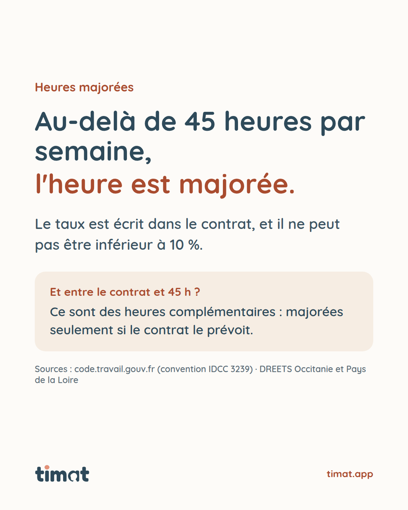
Au-delà de 45 heures par semaine. Image en ligne : https://www.timat.app/reseaux/19-publication-8-heures-majorees.png
Texte Page Facebook
Une semaine à plus de 45 heures d'accueil ? 👇
Au-delà de 45 heures par semaine, ce sont des heures majorées. Le taux de majoration est écrit dans le contrat de travail, et il ne peut pas être inférieur à 10 %.
Entre la durée prévue au contrat et 45 heures, ce sont des heures complémentaires : elles ne sont majorées que si le contrat le prévoit.
Un contrat plus favorable s'applique toujours.
Sources : code.travail.gouv.fr, convention collective 3239 « heures supplémentaires » ; fiches rémunération des DREETS Occitanie et Pays de la Loire.
https://code.travail.gouv.fr/contribution/3239-heures-supplementaires
Légende Instagram
Au-delà de 45 heures par semaine, l'heure est majorée. Le taux est écrit dans le contrat, et il ne peut pas être inférieur à 10 %.
Entre la durée du contrat et 45 heures : heures complémentaires, majorées seulement si le contrat le prévoit.
Sources : code.travail.gouv.fr (convention collective 3239) ; DREETS Occitanie et Pays de la Loire.
#assistantematernelle #assmat #heuressupplementaires #salaire #parentemployeur #conventioncollective
Publication 9 · Indemnité de rupture · image 20
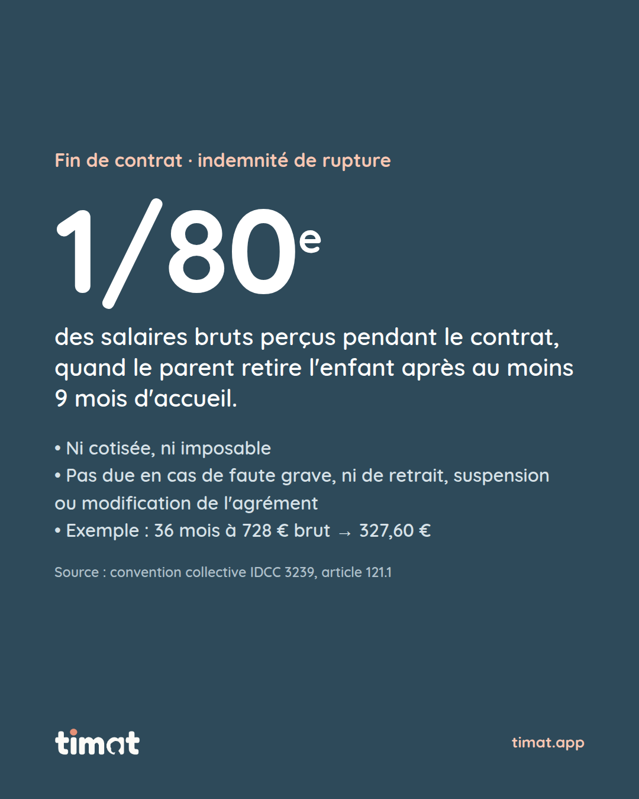
Fin de contrat. Image en ligne : https://www.timat.app/reseaux/20-publication-9-indemnite-rupture.png
Texte Page Facebook
Quand un parent retire l'enfant, une indemnité de rupture est due à l'assistante maternelle qui l'accueille depuis au moins 9 mois 👇
• Elle vaut 1/80e du total des salaires bruts perçus pendant le contrat. Les indemnités d'entretien, de repas et kilométriques n'en font pas partie.
• Elle n'est ni cotisée, ni imposable.
• Elle n'est pas due en cas de faute grave, ni en cas de modification, suspension ou retrait de l'agrément.
Exemple : 36 mois à 728 € brut = 26 208 €, soit 327,60 € d'indemnité.
Source : convention collective IDCC 3239, article 121.1. Fiche du département du Cher sur la rupture du contrat :
https://www.departement18.fr/IMG/pdf/2023_rupture_contrat.pdf
Légende Instagram
Fin de contrat : quand le parent retire l'enfant après au moins 9 mois d'accueil, l'assistante maternelle touche 1/80e des salaires bruts perçus pendant le contrat.
• Ni cotisée, ni imposable
• Pas due en cas de faute grave, ni de retrait, suspension ou modification de l'agrément
• Exemple : 36 mois à 728 € brut → 327,60 €
Source : convention collective IDCC 3239, article 121.1.
#assistantematernelle #assmat #findecontrat #parentemployeur #pajemploi #conventioncollective
Publication 10 · Le pointage dans TiMat · image 21
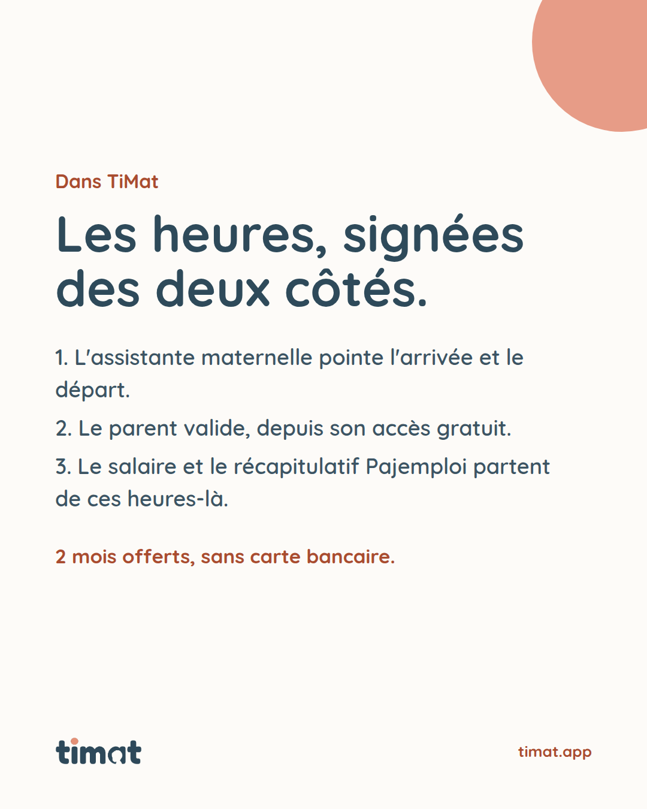
La seule publication de la série qui parle de TiMat. Image en ligne : https://www.timat.app/reseaux/21-publication-10-pointage-signe.png
Texte Page Facebook
Les heures, signées des deux côtés ✍️
Dans TiMat, l'assistante maternelle pointe l'arrivée et le départ de l'enfant. Le parent employeur valide, depuis son accès gratuit. Le salaire, les congés et le récapitulatif à reporter sur Pajemploi partent ensuite de ces heures-là : celles que les deux ont vues.
Moins de cahiers qui se perdent, moins de « je n'avais pas noté la même heure ».
2 mois offerts, sans carte bancaire 👉 www.timat.app
Légende Instagram
Les heures, signées des deux côtés ✍️
Dans TiMat, l'assistante maternelle pointe l'arrivée et le départ. Le parent valide depuis son accès gratuit. Le salaire, les congés et le récapitulatif Pajemploi partent de ces heures-là.
2 mois offerts, sans carte bancaire. Lien dans la bio.
#assistantematernelle #assmat #pajemploi #parentemployeur #nounou #petiteenfance
Série 3 · à programmer avec Metricool
Préparée le 23 octobre 2026, validée par vous et programmée dans Metricool le 24 octobre (Page et Instagram, à 20 h 30, avec le texte alternatif). Chaque règle a sa source, sur l'image et dans le texte. Les règles viennent surtout du guide des assistants maternels de la DREETS Bourgogne-Franche-Comté, mis à jour en juin 2026.
Date proposée (20 h 30)
Page Facebook
Instagram
Ven. 6 novembre
11 · Le préavis (image 30)
Lun. 9 novembre
12 · Le congé pour enfant malade (image 31)
Ven. 13 novembre
13 · Les documents de fin de contrat (image 32)
Lun. 16 novembre
14 · Les indemnités kilométriques (image 33)
Mer. 18 novembre
15 · La fin de contrat dans TiMat (image 34)
Ven. 20 novembre
16 · Les repas (image 35)
Lun. 23 novembre
17 · La période d'essai (image 36)
Ven. 27 novembre
18 · L'enfant absent pour maladie (image 37)
Mer. 2 décembre
19 · La démission (image 38)
Ven. 4 décembre
20 · Les trajets dans TiMat (image 39)
Pourquoi 8 en novembre et 2 en décembre : le forfait gratuit de Metricool permet 20 publications programmées par mois. Si Metricool compte une publication par réseau, novembre en a déjà 4 (séries 2, les 2 et 4 novembre) : 8 publications × 2 réseaux = 16, soit 20 en tout. Je n'ai pas trouvé de page de Metricool qui dise si une publication envoyée sur deux réseaux compte une ou deux fois.
Vérifications : le taux de 0,33 €/km (publication 14) vient de l'arrêté du 29 mai 2026, repris par service-public.fr (+3,2 %) et par un centre de gestion ; la fiche de la DREETS Pays de la Loire du 12 juin 2026 montre encore l'ancien barème (0,32 €), antérieur à cette hausse. La publication 18 (absences de l'enfant malade) s'appuie sur la DREETS, qui commente l'article 105 ; le texte de la convention sur Légifrance n'est pas lisible depuis mon poste.
Publication 11 · Le préavis · image 30
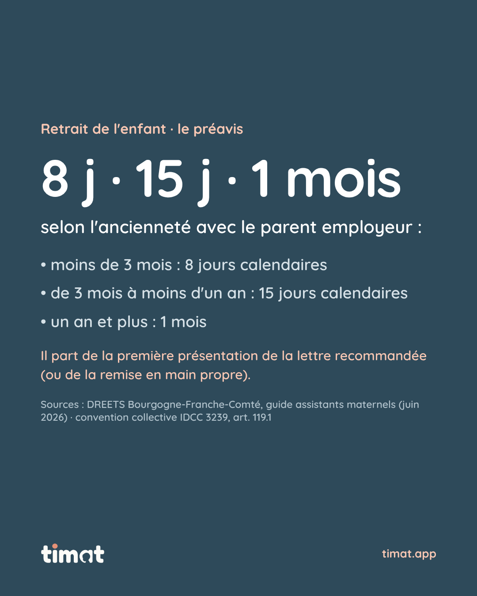
Ven. 6 novembre, 20 h 30. Image en ligne : https://www.timat.app/reseaux/30-publication-11-preavis.png
Texte Page Facebook
Le parent retire l'enfant : combien de temps de préavis ? 👇
Le préavis dépend de l'ancienneté avec ce parent employeur :
• moins de 3 mois : 8 jours calendaires ;
• de 3 mois à moins d'un an : 15 jours calendaires ;
• un an et plus : 1 mois.
Il court à partir de la première présentation de la lettre recommandée, ou de la remise en main propre contre décharge. L'ancienneté s'apprécie à cette date.
Des congés payés pris pendant le préavis le suspendent et en reportent la fin, sauf accord des deux. Si le parent dispense l'assistante maternelle de l'effectuer, il le paie quand même.
Sources : guide assistants maternels de la DREETS Bourgogne-Franche-Comté (mise à jour de juin 2026) ; convention collective IDCC 3239, article 119.1.
https://bourgogne-franche-comte.dreets.gouv.fr/sites/dreets-bourg-fc/files/2026-08/Assistante%20maternelles%20Maj%2006%202026.pdf
Légende Instagram
Le parent retire l'enfant : quel préavis ?
• moins de 3 mois d'ancienneté : 8 jours calendaires
• de 3 mois à moins d'un an : 15 jours calendaires
• un an et plus : 1 mois
Il part de la première présentation de la lettre recommandée (ou de la remise en main propre). Si le parent vous en dispense, il le paie quand même.
Sources : DREETS Bourgogne-Franche-Comté, guide assistants maternels (juin 2026) ; convention collective IDCC 3239, art. 119.1.
#assistantematernelle #assmat #findecontrat #preavis #parentemployeur #conventioncollective
Texte alternatif (les deux réseaux)
Grand texte blanc sur fond bleu : 8 jours, 15 jours, 1 mois. Préavis en cas de retrait de l'enfant selon l'ancienneté : moins de 3 mois, de 3 mois à moins d'un an, un an et plus.
Publication 12 · Le congé pour enfant malade · image 31
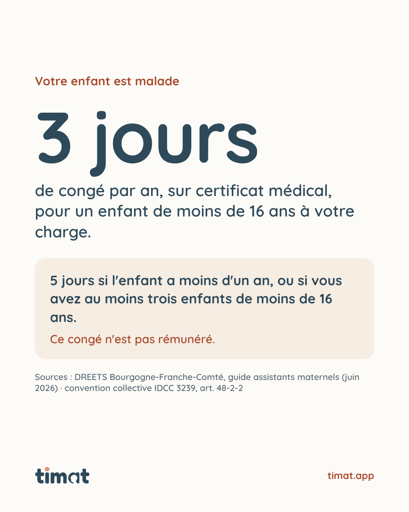
Lun. 9 novembre, 20 h 30. Image en ligne : https://www.timat.app/reseaux/31-publication-12-conge-enfant-malade.png
Texte Page Facebook
Assistante maternelle, et c'est votre propre enfant qui tombe malade ? 👇
La convention collective prévoit un congé pour enfant malade :
• 3 jours par an, sur certificat médical, pour un enfant de moins de 16 ans dont vous avez la charge ;
• 5 jours si l'enfant a moins d'un an, ou si vous avez la charge d'au moins trois enfants de moins de 16 ans.
Ce congé n'est pas rémunéré.
Sources : guide assistants maternels de la DREETS Bourgogne-Franche-Comté (mise à jour de juin 2026) ; convention collective IDCC 3239, article 48-2-2.
https://bourgogne-franche-comte.dreets.gouv.fr/sites/dreets-bourg-fc/files/2026-08/Assistante%20maternelles%20Maj%2006%202026.pdf
Légende Instagram
Votre enfant est malade : vous avez droit à un congé.
• 3 jours par an, sur certificat médical, pour un enfant de moins de 16 ans à votre charge
• 5 jours s'il a moins d'un an, ou si vous avez au moins trois enfants de moins de 16 ans
Ce congé n'est pas rémunéré.
Sources : DREETS Bourgogne-Franche-Comté, guide assistants maternels (juin 2026) ; convention collective IDCC 3239, art. 48-2-2.
#assistantematernelle #assmat #enfantmalade #conges #conventioncollective #petiteenfance
Texte alternatif (les deux réseaux)
Grand texte « 3 jours » sur fond crème : congé par an pour enfant malade, sur certificat médical, pour un enfant de moins de 16 ans. 5 jours si l'enfant a moins d'un an ou avec au moins trois enfants. Congé non rémunéré.
Publication 13 · Les documents de fin de contrat · image 32
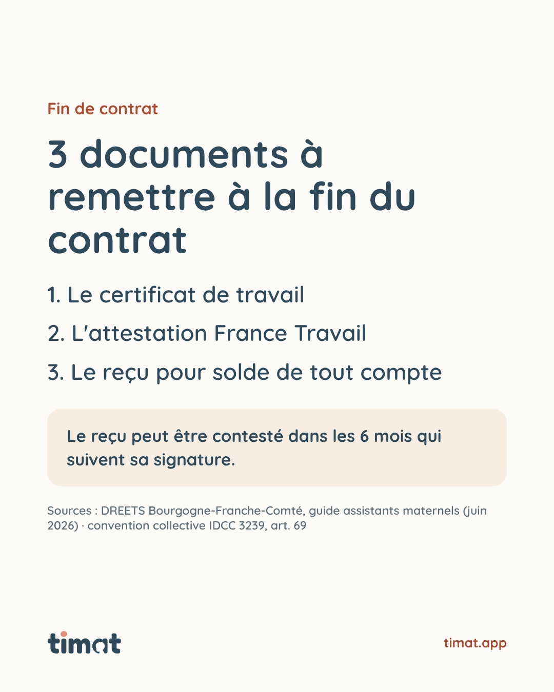
Ven. 13 novembre, 20 h 30. Image en ligne : https://www.timat.app/reseaux/32-publication-13-documents-fin-contrat.png
Texte Page Facebook
Fin de contrat : les trois documents que le parent employeur remet à l'assistante maternelle 👇
1. Le certificat de travail : identité des deux parties, dates de début et de fin, nature de l'emploi, et la portabilité de la prévoyance (IRCEM Prévoyance).
2. L'attestation pour France Travail, qui permet de demander une indemnisation.
3. Le reçu pour solde de tout compte, qui détaille les sommes versées à la fin du contrat. Une fois signé, il peut encore être contesté pendant 6 mois.
Ils sont remis à la date de fin du contrat, y compris après une rupture pendant la période d'essai.
Sources : guide assistants maternels de la DREETS Bourgogne-Franche-Comté (mise à jour de juin 2026) ; convention collective IDCC 3239, article 69.
https://bourgogne-franche-comte.dreets.gouv.fr/sites/dreets-bourg-fc/files/2026-08/Assistante%20maternelles%20Maj%2006%202026.pdf
Légende Instagram
Fin de contrat : 3 documents à remettre.
1. Le certificat de travail
2. L'attestation France Travail
3. Le reçu pour solde de tout compte (contestable pendant 6 mois après sa signature)
Ils sont remis à la date de fin du contrat, même après une rupture pendant l'essai.
Sources : DREETS Bourgogne-Franche-Comté, guide assistants maternels (juin 2026) ; convention collective IDCC 3239, art. 69.
#assistantematernelle #assmat #findecontrat #parentemployeur #pajemploi #conventioncollective
Texte alternatif (les deux réseaux)
Texte sur fond crème : 3 documents à remettre à la fin du contrat : le certificat de travail, l'attestation France Travail et le reçu pour solde de tout compte, contestable dans les 6 mois qui suivent sa signature.
Publication 14 · Les indemnités kilométriques · image 33
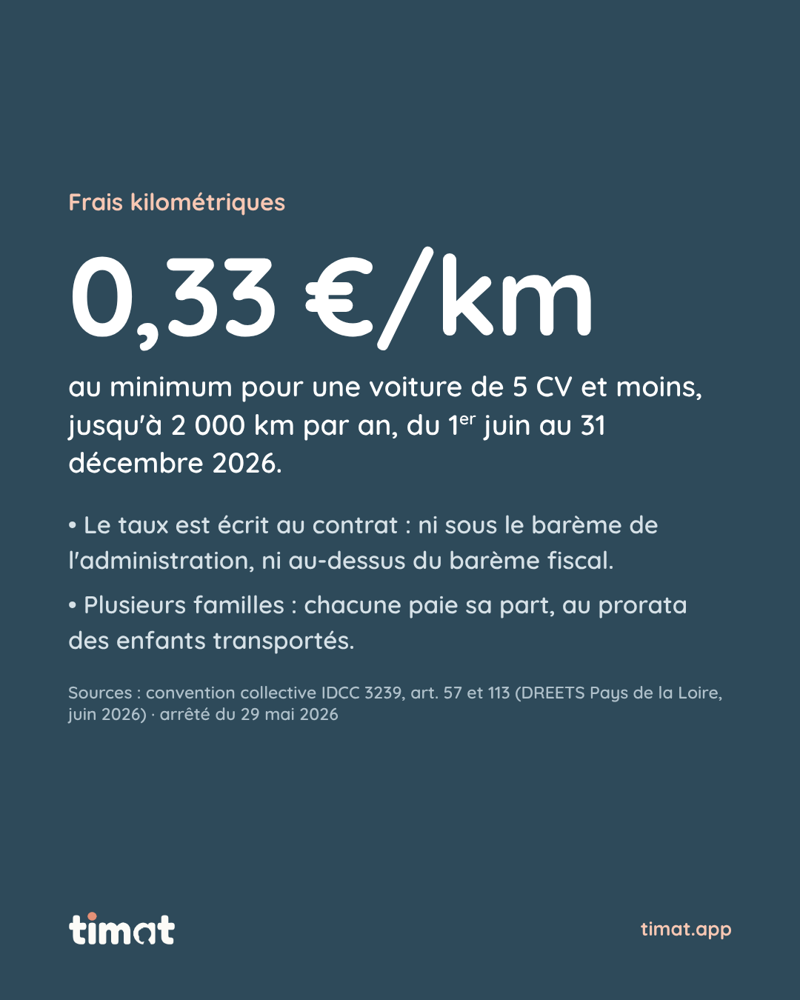
Lun. 16 novembre, 20 h 30. Image en ligne : https://www.timat.app/reseaux/33-publication-14-indemnites-kilometriques.png
Texte Page Facebook
Vous transportez l'enfant dans votre voiture ? 👇
Si le parent employeur vous le demande et que vous l'acceptez, une indemnité kilométrique est due. Son taux est écrit dans le contrat : il ne peut être ni inférieur au barème de l'administration, ni supérieur au barème fiscal.
Exemple pour une voiture de 5 CV et moins : 0,33 € par kilomètre au minimum, jusqu'à 2 000 km par an, du 1er juin au 31 décembre 2026 (hausse temporaire du barème de l'administration, arrêté du 29 mai 2026).
Plusieurs familles demandent le trajet ? Chacune paie sa part, au prorata des enfants transportés, y compris les vôtres si le trajet sert aussi pour eux.
Sources : convention collective IDCC 3239, articles 57 et 113 (fiche de la DREETS Pays de la Loire du 12 juin 2026) ; arrêté du 29 mai 2026.
https://pays-de-la-loire.dreets.gouv.fr/sites/pays-de-la-loire.dreets.gouv.fr/IMG/pdf/fiche_remu_indemnites_frais_au_12062026.pdf
https://www.service-public.gouv.fr/particuliers/actualites/A18943
Légende Instagram
Vous transportez l'enfant en voiture, à la demande du parent ? Une indemnité kilométrique est due.
• Le taux est écrit au contrat : ni sous le barème de l'administration, ni au-dessus du barème fiscal.
• Exemple, 5 CV et moins : 0,33 €/km au minimum jusqu'à 2 000 km par an, du 1er juin au 31 décembre 2026.
• Plusieurs familles : chacune paie sa part, au prorata des enfants transportés.
Sources : convention collective IDCC 3239, art. 57 et 113 (DREETS Pays de la Loire, juin 2026) ; arrêté du 29 mai 2026.
#assistantematernelle #assmat #fraiskilometriques #parentemployeur #conventioncollective #pajemploi
Texte alternatif (les deux réseaux)
Grand chiffre blanc sur fond bleu : 0,33 € par kilomètre au minimum pour une voiture de 5 CV et moins, jusqu'à 2 000 km par an, du 1er juin au 31 décembre 2026. Le taux est écrit au contrat, entre le barème de l'administration et le barème fiscal.
Publication 15 · La fin de contrat dans TiMat · image 34
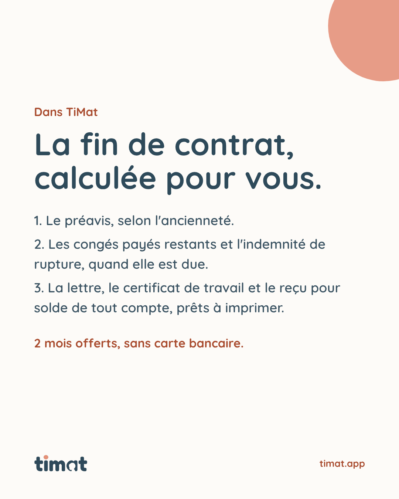
Mer. 18 novembre, 20 h 30. Image en ligne : https://www.timat.app/reseaux/34-publication-15-fin-de-contrat-timat.png
Texte Page Facebook
La fin de contrat, sans tableur 🏁
Dans TiMat, l'écran « Fin de contrat » calcule le préavis selon l'ancienneté, les congés payés restants et l'indemnité de rupture quand elle est due (elle ne l'est pas en cas de faute grave, ni de retrait, suspension ou modification de l'agrément).
Il prépare aussi la lettre de rupture, le certificat de travail et le reçu pour solde de tout compte, prêts à imprimer et à signer.
2 mois offerts, sans carte bancaire 👉 www.timat.app
Légende Instagram
La fin de contrat, calculée pour vous 🏁
Dans TiMat : le préavis selon l'ancienneté, les congés payés restants, l'indemnité de rupture quand elle est due. Puis la lettre, le certificat de travail et le reçu pour solde de tout compte, prêts à imprimer.
2 mois offerts, sans carte bancaire. Lien dans la bio.
#assistantematernelle #assmat #findecontrat #parentemployeur #pajemploi #nounou
Texte alternatif (les deux réseaux)
Texte sur fond crème : dans TiMat, la fin de contrat calculée pour vous. Le préavis, les congés payés restants et l'indemnité de rupture, puis la lettre, le certificat de travail et le reçu pour solde de tout compte prêts à imprimer. 2 mois offerts, sans carte bancaire.
Publication 16 · Les repas · image 35
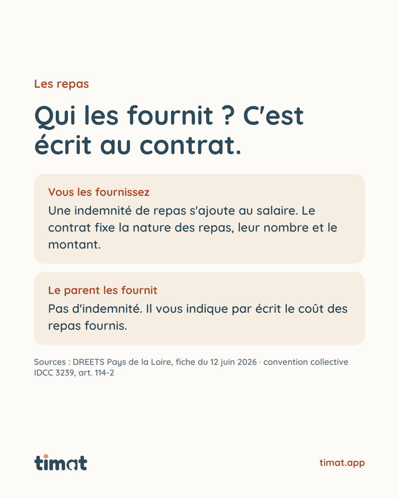
Ven. 20 novembre, 20 h 30. Image en ligne : https://www.timat.app/reseaux/35-publication-16-repas.png
Texte Page Facebook
Les repas de l'enfant : qui les fournit, et qui paie ? 👇
C'est le contrat qui le dit.
• L'assistante maternelle fournit les repas : le parent verse une indemnité de repas, en plus du salaire. Le contrat précise la nature des repas, leur nombre et le montant de l'indemnité.
• Le parent fournit les repas : aucune indemnité n'est due. Il indique par écrit à l'assistante maternelle le coût des repas qu'il fournit.
Sources : convention collective IDCC 3239, article 114-2 ; fiche de la DREETS Pays de la Loire du 12 juin 2026.
https://pays-de-la-loire.dreets.gouv.fr/sites/pays-de-la-loire.dreets.gouv.fr/IMG/pdf/fiche_remu_indemnites_frais_au_12062026.pdf
Légende Instagram
Les repas : qui les fournit ? C'est écrit au contrat.
• Vous les fournissez : une indemnité de repas s'ajoute au salaire. Le contrat fixe la nature des repas, leur nombre et le montant.
• Le parent les fournit : pas d'indemnité. Il vous indique par écrit le coût des repas fournis.
Sources : convention collective IDCC 3239, art. 114-2 ; DREETS Pays de la Loire, fiche du 12 juin 2026.
#assistantematernelle #assmat #repas #parentemployeur #conventioncollective #petiteenfance
Texte alternatif (les deux réseaux)
Texte sur fond crème : les repas, qui les fournit ? C'est écrit au contrat. Si l'assistante maternelle les fournit, une indemnité de repas s'ajoute au salaire. Si le parent les fournit, pas d'indemnité, et il indique par écrit leur coût.
Publication 17 · La période d'essai · image 36
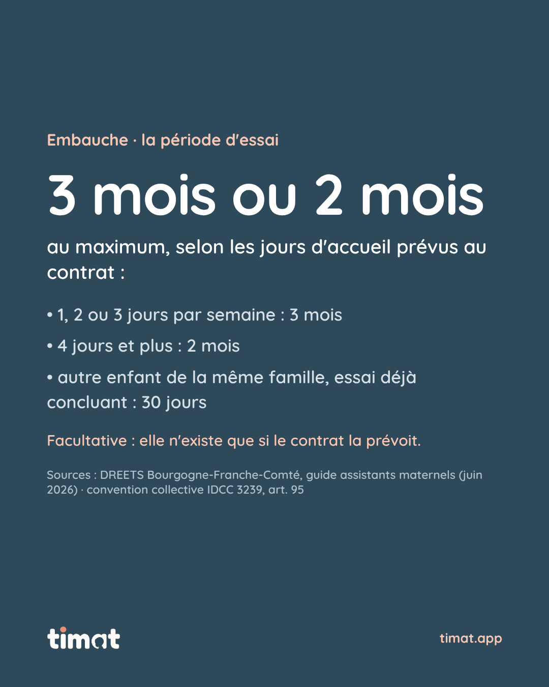
Lun. 23 novembre, 20 h 30. Image en ligne : https://www.timat.app/reseaux/36-publication-17-periode-essai.png
Texte Page Facebook
Nouveau contrat : la période d'essai, combien de temps ? 👇
Elle est facultative : elle n'existe que si le contrat la prévoit, avec sa durée. En CDI, au maximum :
• 3 mois si l'accueil est prévu 1, 2 ou 3 jours par semaine ;
• 2 mois à partir de 4 jours par semaine ;
• 30 jours pour un autre enfant de la même famille, quand une première période d'essai a déjà été concluante.
La période d'adaptation, que le référentiel national de la qualité d'accueil appelle désormais « période de familiarisation » (30 jours calendaires au plus), peut être comprise dans la période d'essai. Pendant l'essai, chacun peut rompre le contrat librement, sans préavis ; les documents de fin de contrat restent dus.
Sources : guide assistants maternels de la DREETS Bourgogne-Franche-Comté (mise à jour de juin 2026) ; convention collective IDCC 3239, articles 94 et 95 à 95.2 ; référentiel national de la qualité d'accueil du jeune enfant (avril 2025).
https://bourgogne-franche-comte.dreets.gouv.fr/sites/dreets-bourg-fc/files/2026-08/Assistante%20maternelles%20Maj%2006%202026.pdf
Légende Instagram
Période d'essai : facultative, et limitée.
En CDI, au maximum :
• 1, 2 ou 3 jours d'accueil par semaine : 3 mois
• 4 jours et plus : 2 mois
• autre enfant de la même famille, essai déjà concluant : 30 jours
La période d'adaptation, dite aussi de familiarisation (30 jours au plus), peut s'y inclure.
Sources : DREETS Bourgogne-Franche-Comté, guide assistants maternels (juin 2026) ; convention collective IDCC 3239, art. 94 et 95 ; référentiel national de la qualité d'accueil du jeune enfant (2025).
#assistantematernelle #assmat #contrat #periodedessai #parentemployeur #conventioncollective
Texte alternatif (les deux réseaux)
Grand texte blanc sur fond bleu : 3 mois ou 2 mois. Période d'essai maximale selon les jours d'accueil : 3 mois pour 1 à 3 jours par semaine, 2 mois à partir de 4 jours, 30 jours pour un autre enfant de la même famille. Facultative.
Publication 18 · L'enfant absent pour maladie · image 37
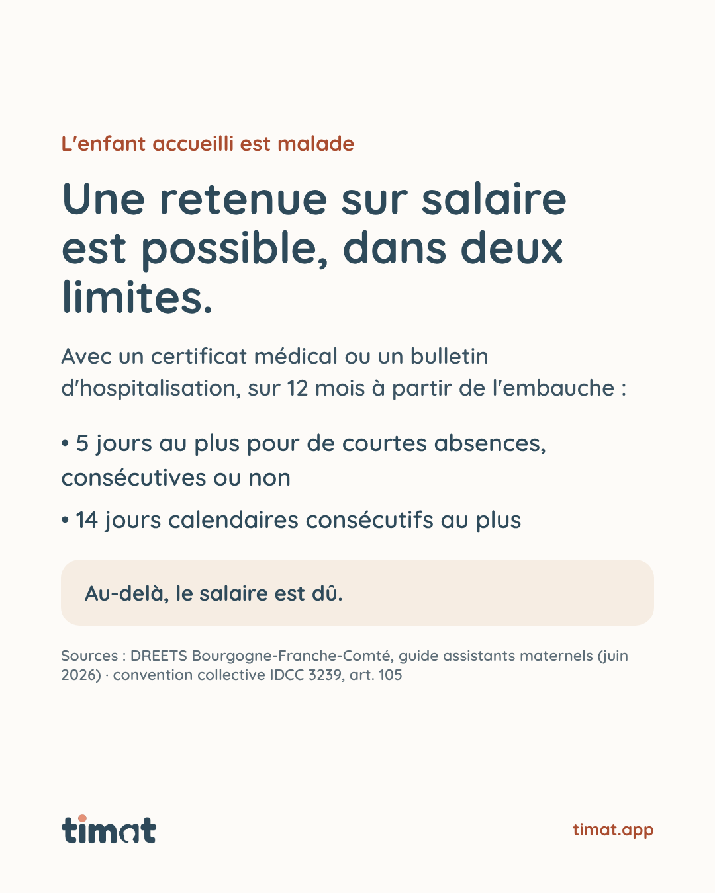
Ven. 27 novembre, 20 h 30. Image en ligne : https://www.timat.app/reseaux/37-publication-18-absence-enfant-malade.png
Texte Page Facebook
L'enfant accueilli est malade : le parent peut-il retirer ces jours du salaire ? 👇
Oui, avec un certificat médical ou un bulletin d'hospitalisation, et dans deux limites, appréciées sur 12 mois à partir de la date d'embauche (puis de chaque date anniversaire du contrat) :
• 5 jours au plus pour de courtes absences, consécutives ou non ;
• 14 jours calendaires consécutifs au plus.
Au-delà de 5 jours de courtes absences, le salaire est dû. Après 14 jours consécutifs, le parent reprend le paiement du salaire, ou met fin au contrat en exerçant son droit de retrait.
Source : guide assistants maternels de la DREETS Bourgogne-Franche-Comté (mise à jour de juin 2026), qui commente l'article 105 de la convention collective IDCC 3239.
https://bourgogne-franche-comte.dreets.gouv.fr/sites/dreets-bourg-fc/files/2026-08/Assistante%20maternelles%20Maj%2006%202026.pdf
Légende Instagram
L'enfant accueilli est malade : une retenue sur salaire est possible, dans deux limites.
Avec un certificat médical ou un bulletin d'hospitalisation, sur 12 mois à partir de l'embauche :
• 5 jours au plus pour de courtes absences, consécutives ou non
• 14 jours calendaires consécutifs au plus
Au-delà, le salaire est dû.
Source : DREETS Bourgogne-Franche-Comté, guide assistants maternels (juin 2026), article 105 de la convention collective IDCC 3239.
#assistantematernelle #assmat #absence #salaire #parentemployeur #conventioncollective
Texte alternatif (les deux réseaux)
Texte sur fond crème : l'enfant accueilli est malade, une retenue sur salaire est possible dans deux limites sur 12 mois : 5 jours pour de courtes absences, 14 jours calendaires consécutifs. Au-delà, le salaire est dû.
Publication 19 · La démission · image 38
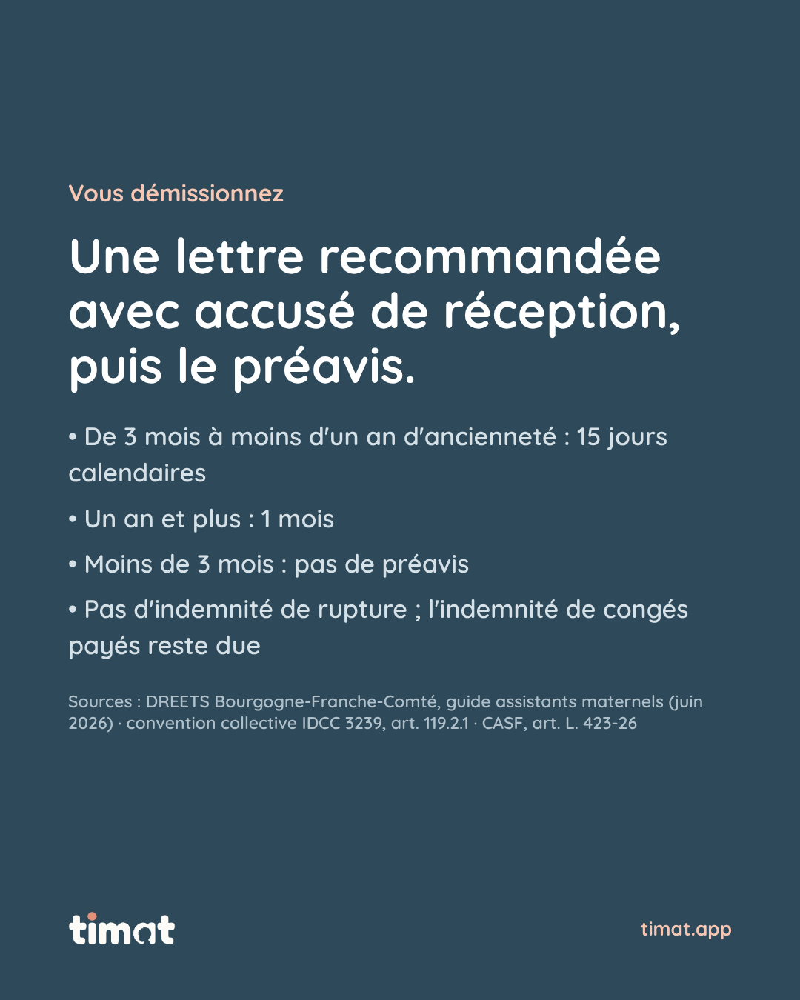
Mer. 2 décembre, 20 h 30. Image en ligne : https://www.timat.app/reseaux/38-publication-19-demission.png
Texte Page Facebook
Assistante maternelle, vous souhaitez démissionner ? 👇
• Prévenez le parent employeur par lettre recommandée avec accusé de réception : le préavis part de sa première présentation.
• Le préavis est le même que pour un retrait de l'enfant : 15 jours calendaires de 3 mois à moins d'un an d'ancienneté, 1 mois à partir d'un an.
• Moins de 3 mois d'ancienneté : pas de préavis à respecter.
• L'indemnité de rupture n'est pas due ; l'indemnité compensatrice de congés payés, elle, reste due.
Sources : guide assistants maternels de la DREETS Bourgogne-Franche-Comté (mise à jour de juin 2026) ; convention collective IDCC 3239, articles 119.2.1 et 121.1 ; code de l'action sociale et des familles, article L. 423-26.
https://bourgogne-franche-comte.dreets.gouv.fr/sites/dreets-bourg-fc/files/2026-08/Assistante%20maternelles%20Maj%2006%202026.pdf
Légende Instagram
Vous démissionnez : une lettre recommandée avec accusé de réception, puis le préavis.
• de 3 mois à moins d'un an d'ancienneté : 15 jours calendaires
• un an et plus : 1 mois
• moins de 3 mois : pas de préavis
• pas d'indemnité de rupture ; l'indemnité de congés payés reste due
Sources : DREETS Bourgogne-Franche-Comté, guide assistants maternels (juin 2026) ; convention collective IDCC 3239, art. 119.2.1 ; CASF, art. L. 423-26.
#assistantematernelle #assmat #demission #findecontrat #conventioncollective #parentemployeur
Texte alternatif (les deux réseaux)
Texte blanc sur fond bleu : vous démissionnez, une lettre recommandée avec accusé de réception puis le préavis : 15 jours de 3 mois à moins d'un an, 1 mois au-delà, pas de préavis avant 3 mois. Pas d'indemnité de rupture, l'indemnité de congés payés reste due.
Publication 20 · Les trajets dans TiMat · image 39
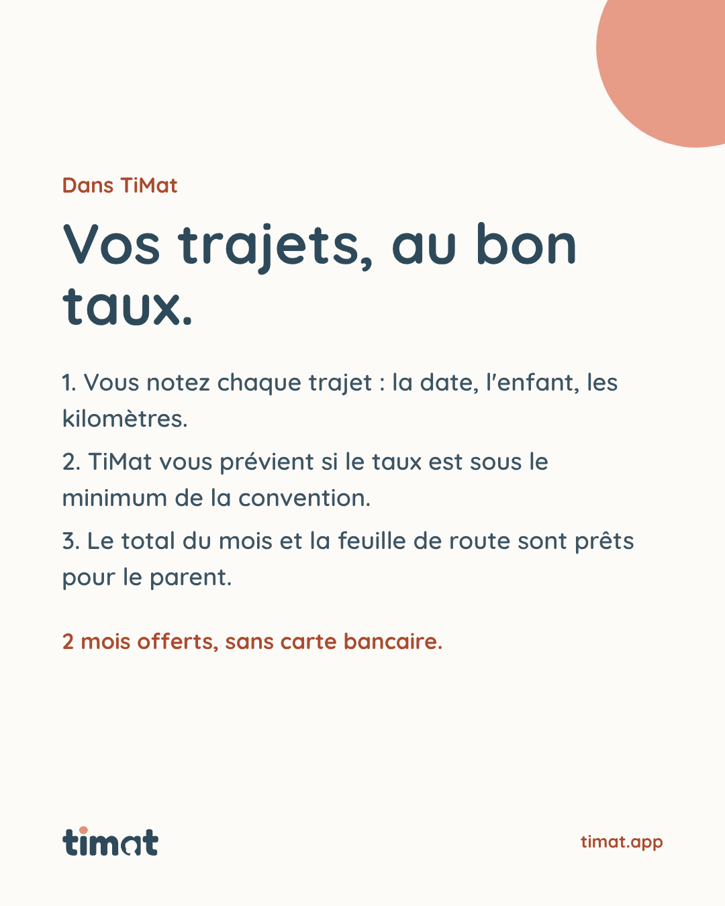
Ven. 4 décembre, 20 h 30. Image en ligne : https://www.timat.app/reseaux/39-publication-20-trajets-timat.png
Texte Page Facebook
Vos trajets avec les enfants, au bon taux 🚗
Dans TiMat, vous notez chaque trajet : la date, l'enfant, les kilomètres et le motif. Si le taux saisi est sous le minimum prévu par la convention, TiMat vous le signale. Le total du mois et la feuille de route kilométrique sont prêts à transmettre au parent.
2 mois offerts, sans carte bancaire 👉 www.timat.app
Légende Instagram
Vos trajets, au bon taux 🚗
Dans TiMat : chaque trajet noté (date, enfant, kilomètres), une alerte si le taux est sous le minimum de la convention, et le total du mois prêt pour le parent.
2 mois offerts, sans carte bancaire. Lien dans la bio.
#assistantematernelle #assmat #fraiskilometriques #parentemployeur #nounou #petiteenfance
Texte alternatif (les deux réseaux)
Texte sur fond crème : dans TiMat, vos trajets au bon taux. Chaque trajet noté avec la date, l'enfant et les kilomètres, une alerte si le taux est sous le minimum de la convention, le total du mois et la feuille de route prêts pour le parent. 2 mois offerts, sans carte bancaire.
Publier à votre place
Page Facebook et Instagram : oui, par un connecteur
Il existe un connecteur officiel Metricool dans l'annuaire des connecteurs de Claude. Metricool est un outil de programmation de publications ; son centre d'aide indique que son connecteur fonctionne avec le forfait gratuit, limité à 20 publications programmées par mois. Une fois branché, je peux préparer et programmer vos publications sur la Page et sur Instagram.
Créez un compte gratuit sur metricool.com, puis ajoutez-y votre Page Facebook et votre compte Instagram.
Sur claude.ai : Paramètres → Connecteurs → cherchez « Metricool » → Connecter, et acceptez l'accès.
Dans une nouvelle conversation, demandez-moi de programmer la semaine. Je vous montre chaque publication et j'attends votre accord avant de la programmer.
Sans aucun connecteur, vous pouvez aussi tout programmer vous-même en une fois : Meta Business Suite (gratuit, l'outil de Meta) programme une même publication sur la Page et sur Instagram, à la date choisie.
Le groupe : non, à la main
Selon plusieurs éditeurs d'outils de programmation, dont Agorapulse, Meta a retiré en avril 2024 la possibilité pour les applications de publier dans les groupes. Aucun outil, connecteur compris, ne peut donc publier dans votre groupe : ces publications se font à la main. Je n'ai pas pu consulter la page officielle de Meta qui l'annonce, qui n'est pas joignable depuis mon environnement.